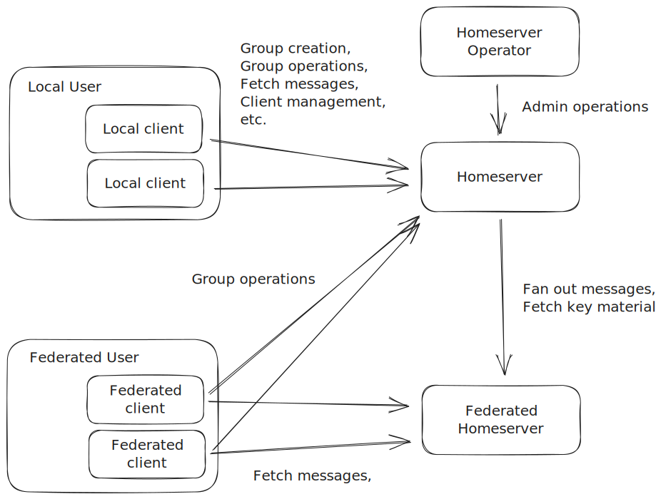

Introduction
This book contains design considerations and documentation for an infrastructure that allows clients to exchange messages via the Messaging Layer Security (MLS) protocol.
Implementation
A proof-of-concept implementation of the client and server parts of the protocol can be found here.
License
The documentation in this book is released under the Creative Commons Attribution 4.0 International License.
Functional Requirements
This section describes the functional requirements of a homeserver. Before we detail the individual requirements, we first introduce the different roles that interact with the system.
Note that while the homeserver should ultimately provide the functionality described, the entity in the given role might have to keep state and perform protocol actions to interact with the homeserver.
Roles
A large part of the infrastructure consists of the homeserver, which is operated by the operator. The homeserver exposes most of its API endpoints to clients of users that are registered with the homeserver. The remaining endpoints of the homeserver's API are accessible to the network, as well as federated homeservers. Individuals that are registered with other homeservers are federated users who run federated clients.
Operator
The entity that operates a homeserver. It is assumed to have control over the domain they configure as the homeserver's home domain.
The Network
The network includes all entities that have access to the port exposing the homeserver endpoints.
Users
Users are individuals that have registered as users with the homeserver and that are associated with a unique and immutable user id scoped by the homeserver's home domain. Each user also has a unique user name. Registered users can have one or more registered clients.
The user is ultimately the entity that other users authenticate before starting a conversation.
In the context of federation, users of a given homeserver will sometimes be called local users as opposed to federated users.
Clients
A client is a piece of software associated with and run by a user. The client holds the key material used to authenticate (and thus the user) to other clients and their users. Each client is associated with a client id that is scoped by its user's ID.
Federated Homeservers
Other instances of the homeserver that are reachable via the network, where both the local and the federated homeserver have been configured to allow mutual federation. Each is assumed to be configured with its own home domain.
Federated Users
Individuals that have registered with a federated homeserver in the same way as users have with the local one.
Federated Clients
Federated clients are clients which are run by federated users. They are regular clients that are associated with a federated user instead of a local user.
Functional Requirements for each Role
Functional Requirements for Homeserver Operators
- Homeserver management: Operators MUST be able to configure the homeserver and manage its users locally.
- Homedomain setup: Operators MUST be able to set the home domain of the homeserver during setup.
- Federation configuration: Operators MUST be able to configure federation: Either by allowlisting other homeservers by their home domain, or by allowing open federation except for a blocklist of home domains for homeservers with which federation is not desired.
Functional Requirements for the Network
- User registration: Entities in the public network MUST be able to register a new user.
Functional Requirements for Users
The distinction between users and their clients is difficult because the user will perform most of their interactions with the homeserver through the client. The following is a list of operations performed through the client, which concern the user as their own entity and might thus also affect all of their clients.
- Client management: Users MUST be able to manage clients (this includes updates to client key material).
- Account reset: Users SHOULD be able to reset the account. Members of groups the user is in MUST be notified of the reset.
- User name change: Users MUST be able to change their user name. Members of groups the user is in MUST be notified of the new name.
- User discovery: Users MUST be able to discover other users.
- Connection establishment: Users MUST be able to initialize a connection with previously discovered users (via a two-user MLS group, implies retrieval of KeyPackages of all of the other user's clients).
- Connection rejection: Users MUST be able to accept or reject a connection initialized by another (local or federated) user. The sender of the connection request SHOULD be notified of the acceptance or rejection of the request.
- Connection management: Users SHOULD be able to block other (local or federated) users s.t. they don't receive messages from that user anymore. Users SHOULD be able to unblock previously blocked users.
- Account deletion: Users MUST be able to delete their account. Members of groups the user is in MUST be notified of the deletion.
Functional Requirements for Clients
MLS natively provides a number of group management mechanics such as membership management. The homeserver's task is thus to fulfill the role of an MLS Delivery Service.
- Group creation: Clients MUST be able to initialize an MLS group.
- Group deletion: Clients MUST be able to delete an MLS group.
- Message delivery: Clients MUST be able to asynchronously send MLS messages to all members of an MLS group that it is a member of (this implies the "filtering server" role specified by the "delivery of messages" requirement of the MLS architecture document). If a given group member has provided the homeserver with a notification for this group, the homeserver MUST attach the notification policy to the message when delivering it. If a group member is a federated client, the homeserver MUST forward the message to the federated homeserver for delivery.
- Message queuing: The homeserver MUST store messages sent to a client either by itself or forwarded by a federated homeserver while the client is offline.
- Message notifications: Clients MAY provide the homeserver with a means to notify them when a new message is queued, as well as a default notification policy. If the client has provided the homeserver with such a means and corresponding policy, the homeserver MUST notify the client according to either the policy attached to the message, or, if none was attached, according to the default policy.
- KeyPackage retrieval: Clients MUST be able to retrieve KeyPackages for clients of users with a previously established connection (this implies the "key storage" requirement). As long as there is more than one KeyPackage, the server MUST delete the KeyPackage after it was provided to a (local or federated) client.
- Welcome message delivery: Clients MUST be able to send Welcome messages to clients of users with a previously established connection. If the client has provided the homeserver with a means of notification (and default notification policy), the homeserver MUST notify the client according to the default policy.
- Message retrieval: Clients MUST be able to fetch messages queued by the homeserver.
- Client authentication: Clients MUST be able to verify the authenticity of MLS leaf Credentials of clients with which it shares a group (this implies at least partially fulfilling the Authentication Service role).
- KeyPackage publishing: Clients MUST be able to publish KeyPackages (this implies the "key retrieval" requirement). When a client publishes new KeyPackages, the homeserver MUST delete all remaining previously uploaded KeyPackages of that client.
- Notification configuration: Clients SHOULD be able to configure notification settings of groups of which it is a member.
Functional Requirements for Federated Homeservers
- Federated message delivery: Federated homeservers MUST be able to send messages for delivery to one of the homeserver's clients.
Functional Requirements for Federated Users
The functional requirements user discovery and connection establishment for local users also apply for federated users.
Functional Requirements for Federated Clients
The functional requirements message delivery, KeyPackage retrieval, welcome message delivery, client authentication and notification configuration for local clients also apply for federated clients.
Modularization and Architecture Overview
The requirements sketched above provide a good distribution of services across modules within the homeserver. Here, we provide a list of modules, as well as the functionality we expect them to provide to users and their clients.
Modules
- Delivery service:
- Initial creation of a group and management of the corresponding state (including addition and removal of members)
- Message delivery to members of a given group
- Authentication service:
- Registration of new users
- Addition and removal of clients of a given user
- User discovery
- Authentication of users through their clients
- Queuing service:
- Creation of queues for clients
- Enqueuing of messages by the delivery service
- Dequeuing of messages by the client owning the queue
- KeyPackage service:
- Upload of KeyPackages
- Retrieval of KeyPackages for a given client or user
Architecture
The following shows a simplified interface between client and homeserver. Note, that for some of the security requirements (which we will detail in a later report), we might add one or more additional modules. For example, we will likely add a module that provides DDoS protection.

Simplified interface for client ↔ backend communication.
Federated Architecture
We will later generalize the above architecture to work in a federated setting. The general principle here is that individual clients only ever communicate through their own homeserver, so if a client’s query is w.r.t. another client, user or group that exists on another backend, that query will be forwarded accordingly. The target client/user/group’s homeserver is implicit in the GroupId/UserId/QueueId in question.

Sketch of a message delivery from one client across two homeserver. Alice contacts her Delivery Service, which in turn contacts the Queuing Service of Backend 2. Finally, Bob can retrieve the message from his homeserver by contacting the Queuing Service.
Performance goals
The goal of the homeserver(s) is to facilitate messaging for consumers in general and in particular consumers with resource constrained devices such as smartphones running. Despite the advances in battery capacity, memory and computational performance in modern smartphones, consumers should still be able to communicate with the infrastructure without incurring disproportionate resource consumption. Additionally applications should be able to use the infrastructure without requiring exceptions to the restrictions that platforms running on modern smartphones (Android, iOS) impose on applications such as limited computation time when running in the background.
Similarly, homeserver operators should be able to run their servers without a significant overhead in costs due to computation, memory or persistent storage.
Quantifying performance goals is hard, since the hardware differs significantly across vendors. However, since cryptography is going to make up the largest consumer of computation time, as well as memory and persistent storage, we are going to use asymmetric cryptographic operations (public key encryption, signatures) as unit of measurement for computational overhead and number of keys that need to be stored as unit of measurement for memory and persistent storage overhead. This has the added advantage that we can later estimate the additional overhead in case of adoption of a Post-Quantum secure scheme with significantly larger key sizes.
Client Queries
- Network overhead: Clients should be able to perform the most commonly used queries (i.e. send a message to a group or retrieve messages from their queue) with a single round-trip. In particular, it should be possible to request own messages in batch, although the service might limit the size each batch of messages retrieved at a time, leading to additional round trips.
- Computational overhead: The estimated computational cost for a given query heavily depends on the type of query. Let n be the number of member in a given group.
- Simple (application) message to a group: One asymmetric operation for both sender and receiver
- Message updating encryption key material: Less than 3log(n) asymmetric operations for the sender and less than log(n)
- Message updating authentication key material of adding/removing a group member: Same as updating encryption key material plus <10 asymmetric operations per joining client
- Joining a new group: between 5n and 10n asymmetric operations
Performance constraints are especially important if the respective operations are potentially performed in the background, i.e. when a user is not currently interacting with the client.
Homeserver Processing
- Network overhead: Homeservers should typically respond to one message with one response, although fan-out of a message can result in additional messages sent over the network in a federated setting. Note, that disproportionate amplification of network traffic (i.e. one client request causing a number of server requests) will be mitigated by rate limiting measures such as traditional IP-based rate limiting and schemes such as Privacy Pass.
- Computational overhead: With the exception of the group joining cost, the computational cost of the server will be roughly equivalent to that of a client processing a given message.
- IO overhead: A query from a client should result in at most one read and one write operation from/to the homeserver’s database, although we expect caching to reduce the number of reads significantly.
Additional Overhead due to Rate-Limiting
More sophisticated rate limiting measures, such as the Privacy Pass protocol might create additional overhead, such as an occasional additional round-trip and asymmetric operation to retrieve an access token from the homeserver. We estimate the required frequency of this kind of operation to be at most once per day.
Threat model
This section describes the different security properties the Phoenix homeserver protocol aims to provide and identifies and assesses threats to those properties.
The threat model is divided into two parts, a threat model based on a slightly modified version of the STRIDE methodology and a more qualitative description of the impacts of various compromise scenarios on the individual actors of the system.
Security properties
The Phoenix homeserver system aims to provide confidentiality and authenticity for the communication between its users, privacy for user metadata and availability for the individual service components. The following briefly summarizes the security users can expect and explains on a high level why the individual security properties hold.
Confidentiality and authenticity
Confidentiality and authenticity of user communication are the foremost priorities of the protocol. Specifically, users can expect that messages are readable only by their intended recipients and that recieved messages indeed originate from the apparent sender.
Both of these properties are already provided by the Messaging Layer Security (MLS) protocol underlying the Phoenix homeserver protocol. However, the authentication service (AS) is responsible for the issuance and distribution of authentication key material. Consequences of AS compromise on confidentiality and authenticity are detailed in the qualitative threat model.
Metadata privacy
Secondary to confidentiality and authenticity is user metadata privacy. This means that the individual services (AS, queuing service (QS), delivery service (DS)) cannot link any individual action of a user with the user's identity (as seen by other users).
The metadata threat model considers two types of adversaries: a snapshot adversary, which has access to snapshots of the server's persisted state, and a more powerful active observer adversary, which has full access to the server including its volatile memory.
The main protection against the snapshot adversary is encryption at rest for almost all relevant metadata. Against the observer, users interact with the services using per-group pseudonyms instead of their real identities.
This threat model does not consider analysis of traffic patterns or other use of network metadata. While the use of network metadata can yield powerful attacks, common countermeasures such as onion routing or the use of mixnets are orthogonal to the Phoenix homeserver protocol and can be used in conjunction with it to mitigate such attacks.
Availability
Availability of services is the final security property of the Phoenix homeserver protocol. While clients are expected to go offline periodically, an adversary should not be able to render a server unavailable to its users.
Besides industry standard mitigation approaches like IP-based rate-limiting, the Phoenix homeserver protocol uses Privacy Pass to rate-limit individual users without violating their metadata privacy.
Qualitative Threat Models
We have two qualitative threat models. One detailing the consequences of a compromised authentication service for confidentiality and authentication of user-to-user communication and one exploring the consequences of federation for the individual actors involved in Phoenix homeserver protocol interactions.
Authentication Service Threat Model
The authentication service (AS) plays a central role in ensuring the end-to-end authentication and confidentiality of client-to-client communication in the Phoenix homeserver protocol. Its main purpose is the issuance of client credentials to new clients. These credentials are in turn used to authenticate the leaf credentials that clients use in their MLS groups.
Baseline: Security under an honest AS
An honest AS will issue only one client credential per user name. As a consequence, users can trust that MLS messages indeed comes from the apparent sender if the signature chain on the message is valid for the given user name. In particular,
- the signature of the message must be valid under the sender's leaf credential
- the signature on the leaf credential must be valid under the sender's client credential
- the signature on the client credential must be valid under the AS intermediate credential
- the signature on the AS intermediate credential must be valid under the AS credential
- the client credential contains the user name expected in the given context
Security under a compromised AS
In case an adversary has compromised an AS (or the AS operator is malicious), security guarantees are limited. In this scenario, the adversary can create and sign new credentials for arbitrary users. The new credential then allows the adversary to sign new leaf credentials, which the adversary can then use to impersonate the user in MLS groups.
However, there are still some security guarantees that the authentication system (in conjunction with MLS) provides in that scenario. More concretely, the adversary cannot impersonate the target user towards any other user that was in an MLS group with the target user before the AS was compromised.
This is because clients are not expected to change their client credential and use the same client credential to sign leaf credentials in all of their groups.
As a consequence, the adversary can only impersonate users towards other users that they are not already in contact with. Additionally, the adversary risks detection of the compromise if at a later point, a user that was already in a group with the target discovers the new credential. This can happen, for example, if such a user joins a group with the maliciously issued credential.
Federation Threat Model
The Phoenix homeserver protocol allows individual homeservers to federate. In a federated context, homeservers communicate with one-another, which gives rise to new threats and security considerations.
For the purpose of this threat model, we consider a homeserver that allows registration of anonymous users, which is in contrast to, for example, an organisation that only allows user registration by its members. We also don’t consider a restricted federation, where federation is only enabled between trusted homeservers. Note that this lack of trust in both users and federated homeservers only strengthens our threat model.
Actors
In our threat model we distinguish between the following actors:
- Users: Individuals that have registered with the local homeserver and that operate one or more clients. Local users are not trusted and can behave either honestly or represent an attacker.
- Operator: The operator of the local homeserver, which is trusted in the context of this threat model.
- Remote Users: Users of a remote homeserver that the local homeserver federates with. Remote users may act as attackers even if their local homeserver operator is honest.
- Remote Operators: Operators of remote homeservers that the local homeserver federates with. As noted above, remote homeserver operators may be honest, but are not trusted in the context of this threat model. A remote homeserver operator may either be malicious and register a large number of users itself, or negligent such that a lack of user registration leads to another actor registering a large number of malicious users. Either way, this threat model assumes that there is no restriction on the registration of malicious users on a remote homeserver.
Assets
This threat model considers the following assets of (local) users and the (local) homeserver operator:
- User assets
- Attention: Any unwanted message that gathers the user’s attention (e.g. a push notification or just a message in the user’s inbox) can be an attack. Since basic homeserver functionality requires that it facilitates connection establishments between (otherwise unconnected) users, attacks on this asset exist on a spectrum. The homeserver won’t be able to prevent individual (unwanted) connections from reaching the user, but it may be able to limit the amount of such attacks.
- Client resources: Since we consider the local resources of user clients to be limited, for example, because the client has limited computational power, or because it runs on battery, any action that causes an undue amount of resource consumption on a user’s device is considered an attack. As with attention, this threat exists on a curve and complete mitigation will not be possible.
- Availability: Essentially an extreme instance of an attack on a client’s resources, we consider actions affecting the availability of a client as an attack.
- Operator assets
- Availability: Actions by other actors that cause the disruption of the services provided by the local backend are considered attacks, both with regard to services provided to local users and services that enable federation.
- Hosting resources/costs: This threat models considers an attack any action that leads to an undue consumption of resources (compute, bandwidth, storage) of the local homeserver. Even if availability isn’t affected, depending on the severity of the attack, excessive resource consumption can be expensive for the local operator.
- Indirect attacks: If an actor manages to use the local homeserver to attack other targets (that don’t have to be part of the messaging infrastructure), this is considered an attack. For example, a remote user or homeserver operator could try to use the homeserver’s federation service in a DoS reflection attack. Or a local user could try to mount an attack on a remote homeserver through its own local homeserver.
Threats
Threats in the context of the Phoenix homeserver federation protocol fall into the categories Denial-of-Service (DoS) and Spam. Both categories also arise in the non-federated architecture, but become more nuanced in the federated case due to the increased number of potential parties involved. Other attacks such as fraud and abuse are of course also relevant in the federated context. However, since they are largely defined through the content of messages (as opposed to the transmission of a message), their prevention, detection and reaction has to take place on another layer of the messaging stack (although blocklisting a federated homeserver might be part of a mitigation technique).
DoS Attacks
DoS attacks in the federated context arise from the possibility of one actor flooding another actor with a large amount of messages. For example, a remote user could send a large amount of malformed messages to another user. The messages might not be enough to sufficiently stress the attacker’s or the victim’s homeservers, but since clients are typically have much fewer resources (e.g. in terms of compute), the victim’s client might be overwhelmed by the large amount of incoming messages. Even if victim’s client recognizes that the messages are malformed and won’t show them to the user, the validation process might tax the client’s resources to the point where it affects the client’s battery life, or even it’s availability to the user.
Another example for a DoS attack is one where a malicious user causes a remote homeserver to take anti-spam or anti-DoS mitigation measures. For example, because the user has managed to send a large amount of messages to the remote homeserver via the attacker’s local homeserver, thus forcing the remote homeserver to block the user’s homeserver from relaying further messages. The attacker thus prevents all other local user from interacting with users on the remote homeserver.
Spam
While individual messages might be considered “Spam”, in the context of the federation protocol, spam is considered a number of messages that might not be enough to be considered a DoS attack, but that (in one way or another) captures the user’s attention. For example, a small number of messages that does not significantly affect the client’s resources, but that ends up on the user’s screen, distracting them from non-spam messages. Or a small number of messages that might not be well-formed enough to pass through the validation checks of the victim’s client, but that make the victim’s homeserver send a push notification that leads to the device actually notifying the user, thus unnecessarily catching the victim’s attention.
Mitigation techniques
The following presents on overview over the techniques used by the Phoenix homeserver protocol to mitigate DoS and Spam attacks, beginning with the mitigation measures against DoS and Spam attacks in the context of interaction with local clients, followed by those for the federated context.
Privacy Pass tokens
Privacy pass (PP) is a protocol currently under standardization by the Privacy Pass working group at the IETF. Generally speaking, it allows one entity (the token issuer) to issue tokens upon request. Another entity can then require the redemption of such a token, e.g. when it serves a request. The Privacy Pass protocol is special in that the redeemed token can be validated, but not otherwise linked to the entity originally requesting the token.
Using PP tokens for DoS and Spam mitigation
The Phoenix homeserver protocol uses PP for DoS and Spam mitigation while allowing clients to remain anonymous (at least to a certain degree) when interacting with endpoints that bear DoS or Spam potential. More concretely, clients can authenticate to the AS and request a number of tokens. The AS then keeps track of which client (or user) was issued how many tokens and can enforce a limit on the tokens issued per entity and/or in general. Any Homeserver endpoint that bears DoS or Spam potential can then require the calling client to present a token for each individual request. The number of tokens a client has thus limits the amount of requests it can make.
While token redemption has a certain computational overhead, it is comparable with the termination of a TLS connection and has the advantage of being scalable independently from other homeserver operations.
Hoarding Attacks
The token scheme described above has the inherent risk of a hoarding attack, where one or more users frequently request tokens up to their allowed maximum and at some point spend them all at once to maximize the number of queries in a small amount of time. This risk can be mitigated at least partially by rotating the key material used in the token issuance and validation process. After keys have been rotated, all previously issued tokens become invalid and the attacker(s) have to start hoarding anew. Another mitigation measure for hoarding attack is traditional, IP-based rate-limiting, thus forcing the hoarding attacker to split its attack among sufficiently many IP addresses (or address spaces) to evade the rate-limiting measures.
Mitigating Sybil-Attacks
Token based spam and DoS attack mitigation is largely reliant on the fact that it is infeasible for the attacker to register a large number of users, which in turn would allow it to request (and then use) a large number of tokens. A variety of measures can be taken to limit user registration such as Proof-of-Work (in the assumption that an attacker has limited computational resources) or Proof-of-Personhood, such as Captchas, or (to some degree) hardware attestation.
Token-based mitigation in the federated case
The Phoenix homeserver protocol uses token-based rate-limiting to prevent spam and DoS attacks in the federated case in the same way as the local case, where clients can request tokens from a federated homeserver, which they can then redeem when interacting with the remote DS. The only difference is in the way that remote clients authenticated with the local AS when they request tokens and in the way that the local AS rate-limits token issuance to individual clients.
Authentication of remote clients
The protocol itself is the same for remote and for local clients in that both authenticate using their client credentials. The AS then verifies the signature on their client credentials. For local clients, the AS can use its own intermediate credentials to validate the signature. For remote clients, the local AS might lack the key material to authenticate the client credential. In that case, the local AS first fetches the key material (root credential, intermediate credentials, as well as revocation information) from the corresponding endpoint of the remote AS and then verifies the signature on the remote client’s credential.
Rate-limiting of remote clients
Both for local and remote clients, the local AS keeps a record of how many tokens an individual client has been issued. For local clients, that is enough, since the local AS can control the rate with which new clients register and prevent Sybil attacks as described above. However, with the AS has no control over registration of remote clients and in case of a negligent or even malicious remote AS, a large amount of remote clients could each request tokens up to their limit to then flood the local DS with requests to either perform a DoS or a spam attack. The local AS thus has to rate-limit not just per-client, but also per remote homeserver (domain). An attacker could then only register a limited amount of clients per domain that they control. Naturally, this assumes that any adversary only controls a limited amount of domains. To mitigate the scenario where an adversary controls a large number of domains, the local AS could keep the limit for new domains low and only increase it slowly to at least prevent a sudden influx of remote clients.
(Group-)Pseudonym-based rate-limiting
In addition to client-based and domain-based token rate-limiting the DS that redeems the tokens can additionally impose per-group rate-limiting measures based on individual group pseudonyms, thus limiting the amount of impact an attacker can have by sending messages to a single group.
STRIDE Threat Model
We describe our threat model by roughly following the STRIDE framework as outlined here. However, we modify the methodology slightly to fit use-case.
Authentication
The "Authentication" property as listed in the STRIDE model can apply to multiple entities in a given operation provided by the homeserver. For example, the message delivery action described in the functional requirements involves the client requesting that the homeserver deliver the message, the homeserver receiving and processing the request, a potential federated homeserver that stores and forwards the request and finally the user receiving the message on the other end.
We thus have three kinds of authentication rather than just one: Client to server (C2S), server to server (S2S) and client to client (C2C), all of which we consider as sub-properties of the authentication property of the STRIDE model.
Spam reduction
Spam (outside of its potential for a denial-of-service attack on the homeserver) is a general risk for a messaging service. We talk about spam reduction rather than spam prevention, because we don't believe spam is a problem that can be avoided entirely in a privacy-preserving messenger and instead aim to reduce it to a minimum.
In the context of our threat model, we consider spam potential an additional security risk for every action that leads to messages being sent to users or that otherwise alerts the user, e.g. by triggering a notification. This is reflected by adding the security property spam reduction to the existing STRIDE properties.
Security assumptions
The operator of a homeserver can leverage its conrol over the homeserver to influence if and how the homeserver serves its users. While the goal of the protocol should be to reduce the amount of control the operator has, there are a few assumptions that need to be made.
Operators are trusted not to spam users
Homeserver operators can circumvent any server-side spam reduction mechanisms and will thus be able to send excessive amounts of messages to a user and their clients (or notifications if the user provides the homeserver with a means to notify them). While the client can impose its own spam reduction mechanisms that the homeserver operator can't circumvent, they will likely also impede the usability of the client.
Operators are trusted not to deny services to individual users
The homeserver operator can control which user the homeserver provides its services to and to which ones it doesn't. Metadata minimalism already mitigates this problem to a certain degree, because in most cases, the operator shouldn't know who makes a certain request. However, some actions such as client management or user name changes require explicit authentication, allowing the operator to lock out users in a targeted way. Similarly, the operator can simply delete records of a specific user from the database, or deny a given user the ability to publish KeyPackages.
Application assets
The homeserver will have to perform all actions listed for the individual roles in the functional requirements section.
To fulfill these requirements, the homeserver will keep the following state (information assets in STRIDE terminology). Each piece of state is annotated by the actions involved in its lifecycle.
- Group state (for message delivery, including associated metadata such as group membership lists)
- Create: Group creation
- Read, Update: Message delivery (with inline MLS group management)
- Delete: Group deletion
- KeyPackages for retrieval by clients
- Create/Update/Delete: KeyPackage publishing (publication of new KeyPackages implies deletion of old ones)
- Read/Delete: KeyPackage retrieval (reading implies deletion, except for KeyPackages of last resort)
- Authentication key material of users and their clients
- Create/Update/Delete: Client management
- Update: Account reset
- Delete: Account deletion
- Read: Client authentication
- User names
- Create: User registration
- Update: User name change
- Read: User discovery
- Delete: Account deletion
This section will be extended with more information assets as the specification is written.
Security requirements
This section iterates over each role and analyses each action as described in the STRIDE introduction section.
In addition to any specific security requirements listed in the individual actions, the following general security requirements must hold.
Basic confidentiality and authentication
All actions performed via the network (which includes all actions with the possible exception those of the operator, which may be local, command-line based actions) MUST use be performed through a unilaterally authenticated TLS 1.3 connection using the home domain of the homeserver.
Metadata minimalism
Metadata that is not required to provide functionality at a later point in time MUST be deleted immediately. Similarly, all metadata that is not required to be stored in the clear MUST be stored encrypted-at-rest.
Architecture
The following figure illustrates the interactions of the individual roles.
.
Operators
The actions by the operator only involve the operator and the homeserver. They thus don't involve other authentication beyond the homeserver authenticating the operator.
Since operators are trusted not to spam their users as per security assumptions, spam prevention will not be listed for operator actions.
Homeserver management
| STRIDE property | Requirement | Remark |
|---|---|---|
| Authentication | Only operators can perform management actions | |
| Integrity | The homeserver must perform checks to ensure the configuration is valid | |
| Non-repudiation | Not a risk. There is only one homeserver operator | |
| Confidentiality | Not a risk. Homeserver management actions are not confidential | |
| Availability | Operators should always be able to perform management actions | |
| Authorization | Not a risk. There is only one homeserver operator role |
Homeserver setup
| STRIDE property | Requirement | Remark |
|---|---|---|
| Authentication | Not a risk. The entity setting up the server can only be the operator | |
| Integrity | The homeserver must check if the homeserver domain is a FQDN at startup | |
| Non-repudiation | Not a risk. At the time of setup, identities don't exist yet | |
| Confidentiality | Not a risk. The home domain is public | |
| Availability | This is a setup action. The homeserver is not running at that time | |
| Authorization | Not a risk. Setup is done by a single entity. |
Federation configuration
| STRIDE property | Requirement | Remark |
|---|---|---|
| Authentication | Only administrators can configure federation | |
| Integrity | Not a risk. Operators are responsible for checking the validity of the configuration | |
| Non-repudiation | Not a risk. There is only one homeserver operator | |
| Confidentiality | Not a risk. Federation configuration actions are not confidential | |
| Availability | Operators should always be able to manage homeserver federation | |
| Authorization | Not a risk. There is only one homeserver operator role |
Public
User registration
| STRIDE property | Requirement | Remark |
|---|---|---|
| Authentication | Not a risk. Registration is publicly accessible | |
| Integrity | The homeserver must perform checks to ensure the user name entered is valid as per specification | |
| Non-repudiation | The user or its client must prove possession of authentication key material | |
| Confidentiality | No requirements besides the general confidentiality requirements | |
| Availability | User registration MAY be restricted when the homeserver has limited resources | |
| Authorization | Not a risk. No authorization required for registration | |
| Spam prevention | To mitigate spam attacks downstream of user registration, the homeserver MAY restrict user registration |
Get AS credentials
| STRIDE property | Requirement | Remark |
|---|---|---|
| Authentication | AS credentials are publicly available to everyone | |
| Clients must be able to authenticate intermediate AS credentials using the corresponding AS credential | ||
| The basic confidentiality and authentication requirements must hold | ||
| Integrity | Not a risk as this is a read-only operation | |
| Non-repudiation | Not a risk. There is no need to trace | |
| Confidentiality | Basic confidentiality and authentication requirements must hold | |
| Enqueued messages must be encrypted according to the specification | ||
| Availability | Clients must always be able to obtain AS credentials | |
| Authorization | Not a risk. All clients are allowed to obtain AS credentials | |
| Spam prevention | Not a risk as getting AS credentials is not message-sending |
Users
Authentication service endpoints
Initiate 2FA operation
| STRIDE property | Requirement | Remark |
|---|---|---|
| Authentication | Only local clients can initiate a 2FA operation | |
| Integrity | Not a risk. The entry in the DB are ephemeral and scoped to the client's ID | |
| Non-repudiation | Not a risk. The client needs to be authenticated, but not otherwise traced | |
| Confidentiality | Not a risk. There is no confidential data in the query | |
| Availability | Clients should always be able to initiate 2FA operations | |
| Authorization | Not a risk. All clients should be allowed to initiate 2FA operations | |
| Spam prevention | Not a risk. The operation is not message-sending or otherwise enables spam |
Initiate user registration
| STRIDE property | Requirement | Remark |
|---|---|---|
| Authentication | Not a risk. Anyone should be able to initialize user registration | |
| Integrity | The client_csr included in the request must be validated (e.g. username must be unique) | |
| Non-repudiation | Not a risk. The client does not need to be identified beyond the client_csr | |
| Confidentiality | Not a risk as long as basic confidentiality and authentication requirements hold | |
| Availability | It is not critical that new users be able to register and the endpoint can be disabled to mitigate an ongoing attack | |
| Authorization | Not a risk. Everyone should be able to initiate registration | |
| Spam prevention | User registration is a big potential amplifier for spam and measures need to be taken to prevent sybil attacks |
Finish user registration
| STRIDE property | Requirement | Remark |
|---|---|---|
| Authentication | Only clients that have initialized user registration before should be able to call this endpoint | |
| The OPAQUE setup must be completed successfully | ||
| Integrity | The KeyPackage in the query parameters must be a valid KeyPackage with a valid credential for the calling client | |
| Non-repudiation | Not a risk. There is no need to trace this operation | |
| Confidentiality | Not a risk as long as basic confidentiality and authentication requirements hold | |
| Availability | It is not critical that new users be able to register and the endpoint can be disabled to mitigate an ongoing attack | |
| Authorization | Not a risk. Only clients that have previously initiated registration should be able to complete it | |
| Spam prevention | User registration is a big potential amplifier for spam and measures need to be taken to prevent sybil attacks |
User account deletion
| STRIDE property | Requirement | Remark |
|---|---|---|
| Authentication | Only the user's own clients should be able to delete the user's account | |
| Account deletion should require multiple factors | ||
| Integrity | Not a risk. All user data is deleted | |
| Non-repudiation | Not a risk. Account deletion does not need to be traced | |
| Confidentiality | Not a risk as long as basic confidentiality and authentication requirements hold | |
| Availability | Users must always be able to delete their own account | |
| Authorization | Users must only be able to delete their own account | |
| Spam prevention | Not a risk. Account deletion should not be message sending |
Dequeue messages
| STRIDE property | Requirement | Remark |
|---|---|---|
| Authentication | Clients should only be able to dequeue messages from their own queue | |
| Integrity | Outdated messages (sequence numbers lower than sequence_number_start) must be deleted from the queue | |
| Non-repudiation | Not a risk. Message dequeuing need not be traced | |
| Confidentiality | Not a risk as long as basic confidentiality and authentication requirements hold | |
| Availability | Clients must always be able to dequeue messages from their own queue | |
| Authorization | Clients must only be able to dequeue messages from their own queue | |
| Spam prevention | Dequeuing messages is not a message sending operation |
Enqueue message
| STRIDE property | Requirement | Remark |
|---|---|---|
| Authentication | Not a risk. All clients should be able to enqueue messages into the queues of all other clients | |
| Integrity | Not a risk. | |
| Non-repudiation | Not a risk. Clients must be able to enqueue messages anonymously | |
| Confidentiality | Basic confidentiality and authentication requirements must hold | |
| Enqueued messages must be encrypted according to the specification | ||
| Availability | The ability to enqueue messages for a given client might be deactivated or rate-limited if there is increased spam activity | |
| Authorization | Not a risk. All clients may enqueue messages for all other clients | |
| Spam prevention | Enqueuing messages entails a high spam risk. Message enqueuing should be heavily rate-limited |
Clients
This document details the STRIDE requirements for client-initiated actions.
Many client-initiated actions are operations in the context of an MLS group. While the server can track the public group state and thus validate certain subsets of MLS messages (such as the validity of client signatures), it cannot validate all aspects of each MLS message. For example, the server cannot inspect parts of the payload that are encrypted to private key material held only by group members. As a consequence, the Integrity STRIDE property is limited to publicly readable parts of each message.
Get user client
| STRIDE property | Requirement | Remark |
|---|---|---|
| Authentication | Not a risk. Every client should be able to obtain the set of clients of another user | |
| Access should be limited to prevent DoS attacks | ||
| Integrity | The user retrieving the client information must be able to verify it | |
| Non-repudiation | Not a risk. Users must be able to discover other users anonymously | |
| Confidentiality | Not a risk as long as basic confidentiality and authentication requirements hold | |
| Availability | Users should be able to discover a reasonable number of users at a time. However, it must be hard to exhaust a user's AddPackages | |
| Authorization | Not a risk. All users should be able to discover other users | |
| Spam prevention | Not a risk. Discovering a user should not be message sending |
Group creation
| STRIDE property | Requirement | Remark |
|---|---|---|
| Authentication | Only clients of local users can create new groups | |
| The group creator has to be able to authenticate itself as the only member of the group | ||
| Integrity | The homeserver must perform checks to ensure the group state is valid | Only possible to a certain extent |
| Non-repudiation | Not a risk as long as the authentication requirements hold. | |
| Confidentiality | The homeserver must not learn the identity of the group creator | Authentication can be done pseudonymously |
| Availability | Users should always be able to create new groups (limited by anti-spam measures) | |
| Authorization | Not a risk. All users should be able to create groups | |
| Spam prevention | The homeserver must limit the number of groups created by a given user |
Message delivery
| STRIDE property | Requirement | Remark |
|---|---|---|
| Authentication | Only local or federated clients can send messages | |
| Only members of a given group can send messages to that group | ||
| Members must not be able to send messages on behalf of other members | ||
| Integrity | The homeserver must perform checks to ensure the message is valid | Only possible to a certain extent |
| Non-repudiation | Group members must be able to identify the sender of a message | |
| Confidentiality | The homeserver must not learn the identity of the sender | Authentication can be done pseudonymously |
| Availability | Users should always be able to send messages to groups that they are members of | |
| Authorization | Not a risk. All group members should be able to send messages | |
| Spam prevention | The homeserver must limit the number of message deliveries, as they are message sending |
Federated Homeservers
Federated homeservers allow their respective users to communicate with one another. Each group is owned by one homeserver, which fans out messages to that group to other homeservers (of which there are members in that group) such that they can store and forward those messages to their users. The owning homeserver in turn allows users of other homeservers to perform group operations for groups that they are a member of.
The only federation-relevant action is thus the fan-out action, as all other actions are essentially public actions.
Message fan-out
| STRIDE property | Requirement | Remark |
|---|---|---|
| Authentication | Any federated homeserver can deliver messages to another homeserver | |
| Homeservers must not be able to fan out messages on behalf of other homeservers | ||
| Integrity | No risk | |
| Non-repudiation | The recipient must be able to identify the sending homeserver | |
| Confidentiality | Not a risk | |
| Availability | Homeserver should generally be able to process fanned-out messages | |
| Authorization | The sender must be authorized to send messages to the recipient as per recipient policy | |
| The sender must prove that it is authorized to deliver a message to the target client | ||
| Spam prevention | The homeserver must limit the number of message deliveries to its client, as they are message sending |
Federated Users
There are user-level operations in a federated context. They can, however, participate in group owned by other homeservers through their clients.
Federated Clients
Federated clients can perform same actions as local clients with the exception of group creation. The same STRIDE requirements apply.
Cryptographic primitives and schemes
To fulfill the functional and performance requirements, as well as those for security and privacy, the homeserver will need to employ a number of cryptographic primitives, e.g. signature, authenticated encryption, etc. This chapter discusses the primitives required, as well as the choice of schemes that are used for the initial specification. As customary in other protocol specifications the set of schemes used by a homeserver is called the homeserver's ciphersuite.
Federation and cryptographic agility
Each homeserver operator will have its own requirements with regard to the ciphersuite that they want to use. This could be, for example, due to the requirement for the primitives to be certified in some way, or to meet a specific level of security for organizational policy reasons.
The underlying Messaging Layer Security (MLS) supports agility for a number of reasons and homeservers should, too.
For the initial homeserver specification, however, only one ciphersuite will be supported, even though the design will accommodate the requirement for homeservers to advertise their ciphersuite support.
List of cryptographic primitives and schemes
For now, the homeserver is anticipated to require mostly basic symmetric and asymmetric primitives to fulfill its functional requirements. This is with the exception of an unlinkable token scheme to enable rate-limiting while allowing clients to access the homeservers services anonymously.
Along with the list of primitives, the list also includes a concrete scheme for each primitive that will be used in the initial specification.
In addition to the scheme's fitness to facilitate the listed requirements of the homeserver (functional, security, privacy, performance), an implementation of each scheme has to be available and fulfill the following criteria:
- Open source with an OSI-recognized license
- ideally implemented in Rust
- actively and well maintained
The RustCrypto suite of cryptographic implementations provides well-maintained Rust implementations of a large variety of cryptographic primitives and schemes. While they are generally not as highly optimized for performance as other available implementations, they provide a good baseline that is sufficient for a PoC homeserver implementation. In the future, we hope to upgrade any implementations we decide on for the PoC with similarly well performing ones that have formally verified properties such as functional correctness and secret-independent execution,
When it comes to the concrete choice of primitives and schemes, an easy choice for the initial specification is the suite of schemes in the “mandatory-to-implement” (MTI) ciphersuite of MLS, as it represents a compromise between security and good performance on a variety of devices. In particular, the primitives and schemes are
- Signatures: Ed25519
- Hash function: SHA256
- AEAD scheme: AES128-GCM
- KEM: DHKEMX25519
Additional recommendations for primitives that might be used in the homeserver specification are
- MAC: HMAC-SHA256
- KDF: HKDF-SHA256
While these are the schemes that should make up the first ciphersuite of the homeserver, the specification should remain modular, such that multiple schemes can be supported and different versions of the homeserver protocols can introduce or deprecate individual ciphersuites.
All schemes above have been well-tested in a variety of modern, cryptographic protocols (e.g. Signal, TLS). The only choice that might not be immediately obvious is AES128-GCM as AEAD scheme, since in many cases, Chacha20-Poly1905 is frequently used as a more efficient scheme on devices that don’t have hardware support for AES, most of those with ARM processors. However, with the most recent generations of ARM processors supporting AES instructions, AES128-GCM is a good choice for a first ciphersuite, given that support for multiple ciphersuites is planned for the future.
Unlinkable tokens
Should unlinkable tokens be used to facilitate a metadata friendly rate-limiting mechanism, their performance is essentially to not ultimately represent a denial of service vulnerability themselves.
Since the Privacy Pass protocol is the only well-known unlinkable token scheme that has seen extensive real-world use and analysis, it is recommended as the protocol of choice for metadata-friendly rate-limiting. Besides its use in practice, it is also on the finishing stretch of the IETF standardization process. Privacy Pass defines a number of token types, each backed by another cryptographic scheme. Performance tests have revealed, however, that all schemes suggested in the draft specification are prohibitively expensive in terms of computational overhead in the various protocol operations. To mitigate this shortcoming, the authors of this document have proposed a new batched token type based on the Ristretto255 group (also in the process of IETF standardization), which has significantly improved performance over the schemes used by existing token types. These improved results come at a slight security cost, which can be mitigated by a conservative key rotation policy.
The authors have already performed initial performance tests justifying the effort and published a document defining the new token type, as well detailing the security recommendations for consideration by the Privacy Pass working group at the IETF.
Specification (Draft)
This section contains a proof-of-concept specification of the Phoenix homeserver protocol. The goal is for it to fulfill the functional requirements and be the target for analysis via the threat model.
The specification is split into subsections according to the modular structure of the homeserver. In particular, the specification covers the following modules.
Authentication Service (AS)
The authentication service deals with user management, as well as user and client identity. For each user, it keeps an AS user record that contains the user name, as well as identifiers and cryptographic key material of the user's client. The AS also provides the necessary funtionality for discovery and connection establishment.
When communicating with the AS, users authenticate themselves using their real identity. This is as opposed to the rest of the homeserver, where users use pseudonyms for authentication.
Queuing Service (QS)
The queuing service stores queued messages for each client and forwards messages to remote queuing services. It also stores MLS KeyPackages uploaded by clients that allow users to add connected users to groups. After registration with the AS, clients can create a pseudonymous group message queue and upload KeyPackages. The homeserver's DS can deliver messages to individual queues and ask the QS to store-and-forward messages to remote QS'.
The queues and KeyPackages of a user's clients are organized on the QS in a QS user record. This record is not linked directly to the user's AS user record and prevents the homeserver from gathering metadata of individual users. For more information see the homeserver's threat model.
Delivery Service (DS)
The delivery service is fulfills the role of the service of the same name described in the MLS architecture document. Clients can use it to create new groups and deliver MLS messages to these groups. Group member management is transparent via the MLS-native member management.
Communication between clients and the DS is authenticated based on per-group pseudonyms. Each distinct pseudonym used by a given user on the DS is linked to the user's pseudonymous record on the QS via the ClientQueueConfig of each of the user's clients. In particular, this means that a DS alone cannot correlate group memberships of a given user. While not very meaningful in the context of an individual homeserver, this separation of pseudonyms is more relevant in the federated setting.
Authentication Service (AS)
In this chapter, we detail the different functionalitites of the authentication service. See the subchapter on credentials for more details on the credential types referenced in this chapter.
For an overview over the security of the AS see here.
Configuration
The AS is configurable by use of the following configuration variables:
- Anonymous token timeframe: The amount of time which each client has to wait until it can obtain new anonymous authentication tokens.
- Default token allowance: The default amount of anonymous authentication tokens issued to each user in the anonymous token timeframe.
- Identity provider: Network address of the OpenID connect identity provider the authentication service delegates authentication to for account registration.
- Maximal QS client record age: Maximal age of an inactive client entry.
- Default: 90d
- Maximal number of requested messages: Maximal number of messages that will be returned to a client requesting messages from a direct queue.
AS state
The AS generally keeps the following state
- User entries: A database with one entry for each user account. Each entry is indexed by the user's user name and contains a number of sub-entries.
- OPAQUE user record: The OPAQUE protocol artifact that allows the user to authenticate itself via its password in queries to the AS.
- Client entries: Sub entries for the users' clients. Indexed by the clients' client id.
- Client credential: The credential of the client.
- Token issuance records: A record of how many tokens were issued to the client.
- Activity time: Timestamp indicating the last time a client has fetched messages from the queue.
- Connection establishment KeyPackage: A key package used to encrypt information in the connection establishment process.
- Direct queue: A queue similar to the fan-out queues on the QS.
- Queue encryption key material: Key material to perform queue encryption.
- Queue encryption key: HPKE public key of the queue owner
- Encryption ratchet key: Symmetric key used to derive queue encryption keys.
- Current sequence number: The current message sequence number.
- Queued messages: A sequence of ciphertexts containing the messages in the queue. Each incoming message is encrypted and is assigned the current sequence number, after which the current sequence number is incremented.
- Queue encryption key material: Key material to perform queue encryption.
- Ephemeral OPAQUE DB: An in-memory database that stores user-name or client-id indexed entries
- Client credential: Credential of the client that is being added to an existing user entry, or the initial client of a new user entry.
- Optional OPAQUE state: OPAQUE server state, only present in case of the OPAQUE online AKE flow, i.e. if a client performs 2FA, but not during an OPAQUE setup.
- AS credential key material: Credentials that can be retrieved by clients, as well as the private key material used by the AS to sign client CSRs.
- AS OPAQUE key material: OPRF seed, server public key and server private key as required for the server to perform OPAQUE registration a login flows with clients.
Authentication
There are three modes of authentication for endpoints on the AS.
- None: For endpoints that are meant to be publicly accessible, e.g. user account registration
- Client Credential: A signature over a time stamp using the signature key in the calling client's ClientCredential. The request additionally contains the calling client's ClientCredential.
- Client Password: An OPAQUE login flow.
- Client 2FA: The same as Client, but additionally performing an OPAQUE login flow
Initiate 2FA operation
The client has to query this endpoint before it can query an endpoint that requires Client 2FA authentication. Note that this endpoint is not meant to be used with endpoints that require Client Password authentication such as the client addition endpoint. Similarly, this endpoint is not meant to be used to set up 2FA (see here instead).
#![allow(unused)] fn main() { struct Initiate2FaAuthenticationParams { client_id: ClientId, opaque_ke1: OpaqueKe1, } }
The AS then performs the following steps:
- perform the first (server side) step in the OPAQUE online AKE handshake
- store the resulting OPAQUE
server_statein its ephemeral DB - return the OPAQUE response to the client
#![allow(unused)] fn main() { struct Initiate2FaAuthenticationResponse { opaque_ke2: OpaqueKe2, } }
Authentication
- Client Credential
Initialize user registration
The user registration functionality requires the user to perform an OPAQUE registration flow with the homeserver. Note, that the user's chosen user name is part of the client_csr.
#![allow(unused)] fn main() { struct InitUserRegistrationParams { client_csr: ClientCsr, opaque_registration_request: OpaqueRegistrationRequest, } }
The AS then performs the following steps:
- check if a user entry with the name given in the
client_csralready exists - validate the
client_csr - perform the first (server side) step in the OPAQUE registration handshake
- sign the CSR
- store the freshly signed ClientCredential in the ephemeral DB
- return the ClientCredential to the client along with the OPAQUE response.
#![allow(unused)] fn main() { struct InitUserRegistrationResponse { client_credential: ClientCredential, opaque_registration_response: OpaqueRegistrationResponse, } }
After receiving the response, the client must call the finalize user registration endpoint.
Authentication
- None
Finish user registration
This endpoint allows the user to finish its registration.
#![allow(unused)] fn main() { struct FinishUserRegistrationParams { user_name: UserName, queue_encryption_key: HpkePublicKey, connection_key_package: KeyPackage, opaque_registration_record: OpaqueRegistrationRecord, } }
The AS performs the following actions:
- look up the initial client's ClientCredential in the ephemeral DB based on the
user_name - authenticate the request using the signature key in the ClientCredential
- check (again) if the user entry exists
- create the user entry with the information given in the request
- create the initial client entry
- delete the entry in the ephemeral OPAQUE DB
Authentication
- Client 2FA (the AS has to successfully complete the OPAQUE handshake and the client needs to provide Client Credential authentication using the signature key of the initial client)
Get user connection package
Given a user name, get a connection package for the user's client.
#![allow(unused)] fn main() { struct UserClientsParams { user_name: UserName, } }
The AS returns the following information.
#![allow(unused)] fn main() { struct UserClientsResponse { connection_package: ConnectionPackage, } }
Authentication
- None
User account deletion
Delete the user account with the given user name.
#![allow(unused)] fn main() { struct DeleteUserParams { user_name: UserName, opaque_ke3: OpaqueKe3, } }
The AS performs the following actions:
- look up the OPAQUE
server_statein the ephemeral DB based on theclient_id - authenticate the request using the signature key in the ClientCredential
- perform the
ServerFinishstep of the OPAQUE online AKE flow - delete the user entry
- delete the entry in the ephemeral OPAQUE DB
Authentication
- Client 2FA
Dequeue messages
Dequeue messages from a client's direct queue, starting with the message with the given sequence number.
#![allow(unused)] fn main() { struct DequeueMessagesParams { client_id: ClientId, sequence_number_start: u64, max_message_number: u64, } }
The AS deletes messages older than the given sequence number and returns messages starting with the given sequence number. The maximum number of messages returned this way is the smallest of the following values.
- The number of messages remaining in the queue
- The value of the
max_message_numberfield in the request - The AS configured maximum number of returned messages
Authentication
- Client
Enqueue message
Enqueue a message into a client's direct queue.
#![allow(unused)] fn main() { struct EnqueueMessageParams { client_id: ClientId, connection_establishment_ctxt: Vec<u8>, } }
Authentication
- None
Get AS credentials
Get the currently valid AS credentials and AS intermediate credentials.
#![allow(unused)] fn main() { struct AsCredentialsResponse { as_credentials: Vec<AsCredentials>, as_intermediate_credentials: Vec<AsIntermediateCredential>, revoked_certs: Vec<Fingerprint>, } }
Authentication
- None
Token Issuance
This endpoints allows both local clients and clients of federated homeservers to retrieve Privacy Pass tokens which they can then redeem to interact with the local DS.
#![allow(unused)] fn main() { struct RequestToken { client_id: ClientId, token_request: TokenRequest, } }
TokenRequest represents a Privacy Pass token request.
Rate-limiting
Token issuance is the main way of rate-limiting queries to the endpoints of the DS of a homeserver, which means that the AS should rate-limit token issuance based on a per-client basis, essentially giving each client a certain allowance of tokens.
If the calling client is a federated client, rate-limiting should also occur on a per-homeserver (or per homeserver domain) basis to protect agains malicious or negligent homeservers that allow an attacker to register a large number of clients.
Authentication
For this endpoint, the AS also accepts authentication by federated clients. If the client_id in the client credential indicates that the client belongs to a federated homeserver, the AS looks up the authentication key material of that client's AS using the corresponding endpoint, or looks the key material up in its local cache. The AS then uses that key material to verify the query.
- Client Credential
Credentials
The MLS protocol underlying the Phoenix homeserver protocol uses different types of credentials to identify different actors. It also uses credential chaining to make credential management easier.
Credential Fingerprints
Credentials can be referenced via their credential fingerprints. A credential fingerprint is simply the hash of the credential, where the hash is determined by the CredentialCiphersuite.
#![allow(unused)] fn main() { struct CredentialCiphersuite { hash: Hash, signature_scheme: SignatureScheme, } }
Credential Expiration
All credentials expire after a certain amount of time. The validity period of a credential is indicated by its ExpirationData. Credentials may only sign credentials where the validity period of the signed credential is within the validity period of the signing credential.
#![allow(unused)] fn main() { struct ExpirationData { not_before: u64, not_after: u64, } }
Credential Signing and Self-Signatures
All credentials must include a signature over themselves to prove possession of the signature key. The credential structs thus have the following structure.
#![allow(unused)] fn main() { struct CredentialPayload { // ... credential data } struct CredentialSelfSignedPayload { payload: CredentialPayload, // SignWithLabel(., "CredentialPayload", CredentialPayload) self_signature: Signature, } struct Credential { signed_payload: CredentialSelfSignedPayload, // SignWithLabel(., "CredentialSelfSignedPayload", CredentialSelfSignedPayload) signature: Signature, } }
Note that the types of the individual credential types below must have their own distinct names so that the resulting signatures are specific to a credential type and cannot be used for a confusion attack.
In the following sections, we only describe the CredentialPayload struct for each credential.
AS credentials
- Used to sign intermediate AS credentials.
- The AS keeps those offline or in an HSM.
- They should be valid for a long time, e.g. 10 years.
- Rotation MUST be possible despite the long validity period.
- The controller of domain should still be able to “rotate” by simply publishing a new cert via the get AS credentials endpoint.
- There is no higher-level credential, so this is self-signed only.
#![allow(unused)] fn main() { struct AsCredential { as_domain: Fqdn, expiration_data: ExpirationData, credential_ciphersuite: CredentialCiphersuite, public_key: SignaturePublicKey, } }
AS intermediate credentials
- Used to sign client credentials.
- Should be published in the same way as the AS credential.
- Signed by an AS credential
#![allow(unused)] fn main() { struct IntermediateAsCredential { expiration_data: ExpirationData, credential_ciphersuite: CredentialCiphersuite, public_key: SignaturePublicKey, // PK used to sign client credentials signer_fingerprint: CredentialFingerprint, // fingerprint of the signing AsCredential } }
Client Credentials
- Used by clients to sign LeafCredentials, as well as some other messages such as the WelcomeAttributionInfo and the connection packages.
- Should be stored by clients in their device’s secure enclave if possible.
#![allow(unused)] fn main() { struct ClientCredential { client_id: ClientId, expiration_data: ExpirationData, credential_ciphersuite: CredentialCiphersuite, public_key: PublicSignatureKey, signer_fingerprint: CredentialFingerprint, } }
Client credential signing requests
When a client requests that its credential be signed by an AS, it sends the CredentialSelfSignedPayload as defined here.
Leaf credentials
- per-group credential
- contains the client's pseudonymous identity for that group
- contains an encrypted signature by the client credential
- signature encrypted under the client's Friendship Encryption Key
- to be used in leaves in an MLS group
#![allow(unused)] fn main() { struct LeafCredential { identity: Vec<u8>, expiration_data: ExpirationData, credential_ciphersuite: CredentialCiphersuite, public_key: PublicSignatureKey, signer_fingerprint: CredentialFingerprint, encrypted_signature: Vec<u8>, } }
Discovery and connection establishment
Discovery allows users to find other users based on their user name and establish a connection with them. The connection establishment process establishes a connection group that consists of the clients of both connected users, but otherwise functions like a regular group with the exception of the group creation process.
Once two users have a connection, they can add one-another to groups.
The creation process of a connection group is restricted by two considerations: Until the responding user makes its decision to accept the connection, the initiator is considered untrusted and should not be able to push arbitrary content to the responder. That is with the exception of the initiator's user name which the responder can use to identify the initiator.
The second consideration is that neither of the homeservers involved (with the initiator and reponder potentially belonging to two federated homeservers) should know who is connected to whom. This is not straight-forward, as the initiator has to be able to discover the responder by its real user name and use the discovered information to initiate the process.
Connection group creation
To allow connection establishment in the first place, the user's client publishes connection packages with the AS which contains the client's client credential instead of the Leaf Credential that is used in KeyPackages.
#![allow(unused)] fn main() { struct ConnectionPackage { encryption_key: ConnectionEncryptionKey, lifetime: ExpirationData, client_credential: ClientCredential, // TBS: All information above signed by the ClientCredential. signature: Signature } }
When discovering a user, the initiator fetches the connection packages the user's client. The initiator then creates a new group and sends a ConnectionEstablishmentPackage to the responder's client.
#![allow(unused)] fn main() { struct ConnectionEstablishmentPackage { sender_client_credential: ClientCredential, connection_group_id: GroupId, connection_group_ear_key: GroupStateEarKey, connection_group_credential_key: CredentialEarKey, // TBS: All information above signed by the ClientCredential. signature: Signature, } }
The ConnectionEstablishmentPackage is signed using the initiator's client credential and encrypted under the ConnectionEncryptionKey of the connection package of the responder's client.
The receiving client must verify the signature on the package and fetch the AS credential and AS intermediate credential to verify the signature chain from the initiator's client credential to the AS credential. The responder can then decide based on the sender's user name (contained in the client credential) if it wants to accept the connection.
The responder accepts the connection by fetching the external commit information required to join the group from the initiator's DS and joins the group via the join connection group endpoint of said DS.
Authentication security guarantees
This section outlines how the Phoenix homeserver protocol facilitates end-to-end authentication.
Overview
The authentication system consists of the authentication services (AS’, one operated by each homeserver operator), which act as a trusted third party for their respective homeserver, and a validation module run on each client. For more information on the consequences of a malicious or compromised AS, see here.
The AS of a homeserver issues client credentials its users’ clients. The clients can then use the credentials to sign the leaf credentials used in each of their groups or in their pre-published MLS KeyPackages. The leaf credentials are then used to sign messages as per the MLS specification.
When a client receives a message from another client, it performs the following validation steps:
- The signature on the message is valid w.r.t. the credential in the sender’s leaf.
- The signature on the sender’s leaf is valid w.r.t. the sender’s client credential.
- The signature on the sender’s client credential is valid w.r.t. one of the credentials published by the AS.
If all signatures are indeed valid, the recipient can conclude that the message came from the user indicated by the user name in the sending client’s client ID.
Similarly, a joiner in a new group performs steps 2. and 3. to authenticate each member of the new group.
Out-of-band validation
To ensure security even against a compromised AS, users can validate the client credentials of their contacts out-of-band. The validation process is as follows:
- Alice sends a hash of her current client credentials to Bob out-of-band
- Bob hashes the credentials of Alice’s clients in their shared connection group and compares the result.
- Bob compares the two hash values to see if his view of Alice’s composed user identity is correct.
The process above ensures that Bob’s current view of Alice’s identity is correct.
Connection groups and multi-client identity
As detailed here, users have a connection group with each of their contacts (but not necessarily with each user they are in a group with). The connection group acts as a reference for users w.r.t. what clients represent an individual contact. If a user is invited into a new group by one of its contacts, but the inviting client is not part of the corresponding connection group, the invited user must decline the invitation.
Delivery Service (DS)
The delivery service keeps track of groups and (pseudonymous) group membership and delivers messages to group members.
DS configuration options
- Maximal DSAuthToken age: Maximal age of an DSAuthToken presented to the DS for client authentication.
- Default: 1h
- Maximal duration of client commit inactivity: Maximal duration between two commits of an individual client before the removal of the client is proposed by the DS.
- Default: 90d
DS state
The DS has a database of EAR encrypted group states indexed by their group ID.
#![allow(unused)] fn main() { struct GroupStateDbEntry { encrypted_group_state: Vec<u8>, timestamp: Timestamp, deleted_queues: Vec<SealedQueueConfig>, } }
The plaintext group state contains the following data:
- Public ratchet tree: The public MLS ratchet trees of the group.
- MLS GroupInfo: The GroupInfo of this group.
- User profile: For each user in the group, the DS keeps the following records.
- Client: The leaf index of the client belonging to the user.
- Client profile: For each client in the group, the DS keeps the following records.
- Client index: The client's leaf index in the public group tree.
- Client credential (encrypted): The client's client credential, encrypted using the group state encryption key.
- Client queue config: The client queue config of the client.
- Activity time: A timestamp indicating either the time the client was added, or the last time the client has sent a commit (whatever is more recent).
- Activity epoch: Epoch of the last time the client has sent a commit (see activity time).
- Past group states: Whenever a new KeyPackage is added to the group, the DS files a copy of the current epoch's group state and keeps it until all group members added in a given, past epoch have updated, or until all KeyPackages added in the given epoch have expired. The copies include the following data:
- Public ratchet tree
- Joining clients: List of the KeyPackagerefs of all clients that are expected to pick up this group state.
- Proposal store: List of proposals sent in this group in this epoch. Gets cleared upon every epoch change.
Proposal store
- The Proposal store is emptied after each successful commit
- Proposals are added to the store either through user self removals,
- If the proposal store is non-empty, the next commit must be a client update that contains all proposals in the proposal store. The DS must reject all other operations containing commits.
- For all requests containing non-update commits, or commits that do not contain all proposals in the store, the DS will return an error message indicating the the proposal store is non-empty.
Authentication
Messages from the client to the DS are authenticated by the client by providing a DsAuthToken, where the DsSenderId in the token depends on the endpoint the client is querying.
#![allow(unused)] fn main() { enum DsSenderId { LeafIndex(u32), KeyPackageRef(KeyPackageRef), } struct DsAuthToken { group_id: GroupId, timestamp: Timestamp, sender_id: DsSenderId, // TBS: group_id, timestamp and sender_id signature: Signature, } }
The verification key used to create the token depends on the sender_id:
- LeafIndex: Signature key in the leaf's credential
- KeyPackageRef: Signature key of the credential in the KeyPackage with the given KeyPackageRef
GroupInfo updates
When sending a commit to change the group state, the sender has to enable the DS to update the MLSGroupInfo of the group. Since the DS either already has most of the required data and can extract the rest from the message, the sender only has to include its signature over the new GroupInfo.
#![allow(unused)] fn main() { struct GroupInfoUpdate { signature: Signature, } }
Message delivery
The majority of endpoints of the DS allow clients to send MLS messages to groups.
Validation
Whenever receiving an MLS message at any endpoint, the DS checks if a local group state with the message's GroupId exists. If it does, the DS locks the corresponding database entry to prevent concurrent access. The DS then takes the GroupStateEarKey that is part of every message delivery request and decrypts the group state. Finally, the DS performs the same validation steps a receiving MLS client would perform, as well as the endpoint-specific validation steps.
The MLS client checks also includes checking that the epoch numbers match. In the case of commits, this comparison along with the lock on the database entry ensure that any conflicts between commits for the same epoch are resolved.
If all validation steps pass, the DS performs the endpoint and message-specific changes to its local group state.
Message distribution
To distribute MLS messages the DS sends messages on to the local QS to enqueue in a local client's queue or to forward to a federated QS. For the message format see here.
In cases where the QS responds with a message indicating that a target queue doesn't exist, the DS assumes that the queue was deleted and proposes the removal of the corresponding group member as specified here.
Activity time
Whenever a client sends a commit as part of a query to an endpoint, the DS updates the activity time and activity epoch of the sender.
Client endpoints
Endpoints meant to be accessed by clients registered with the homeserver via HTTP requests.
Request group id
- Endpoint:
ENDPOINT_DS_GROUP_ID
Request a fresh group id for use with the create group endpoint. The DS samples a fresh group id, checks for collisions and, if none are found, enters the group id as a placeholder into the database. If a collision is found, the DS re-samples until there are no collisions.
#![allow(unused)] fn main() { struct RequestGroupIdResponse { group_id: GroupId, } }
Authentication
- None
Create group
- Endpoint:
ENDPOINT_DS_CREATE_GROUP
#![allow(unused)] fn main() { struct CreateGroupParams { group_id: GroupId, key_package: KeyPackage, encrypted_credential_chain: Vec<u8>, creator_queue_config: ClientQueueConfig, group_info: GroupInfo, initial_ear_key: GroupStateEarKey, } }
- The DS checks if there is a placeholder in the group database for this group id. If there is, it creates the GroupStateDbEntry.
Authentication
- DsSenderId: LeafIndex
Update queue information
- Endpoint:
ENDPOINT_UPDATE_QUEUE_INFO
#![allow(unused)] fn main() { struct UpdateQueueInfoParams { group_id: GroupId, group_state_ear_key: GroupStateEarKey, new_queue_config: ClientQueueConfig, } }
Authentication
- DsSenderId: LeafIndex
Get Welcome information
- Endpoint:
ENDPOINT_DS_WELCOME_INFO
#![allow(unused)] fn main() { struct WelcomeInfoParams { group_id: GroupId, group_state_ear_key: GroupStateEarKey, epoch: Epoch, } struct WelcomeInfoResponse { public_tree: MlsRatchetTree, credential_chains: Vec<u8>, } }
Authentication
- DSSenderId: KeyPackageRef
Get External Commit information
- Endpoint:
ENDPOINT_DS_EXTERNAL_COMMIT_INFO
#![allow(unused)] fn main() { struct ExternalCommitInfoParams { group_id: GroupId, group_state_ear_key: GroupStateEarKey, } struct WelcomeInfoResponse { group_info: GroupInfo, public_tree: MlsRatchetTree, credential_chains: Vec<u8>, } }
Authentication
- DSSenderId: LeafIndex
Adding new users to the group
- Endpoint:
ENDPOINT_DS_ADD_USERS
Operation, where the commit contains one or more inline Add proposals containing the client(s) of one or more new users.
#![allow(unused)] fn main() { struct AddUsersParams { commit: MlsMessage, group_state_ear_key: GroupStateEarKey, group_info_update: GroupInfoUpdate, welcome: Welcome, welcome_attribution_info: Vec<WelcomeAttributionInfo>, key_package: Vec<KeyPackage>, } struct AddUsersParamsAad { encrypted_credential_information: Vec<Vec<u8>> } }
The commit must include the AddUserParamsAad of all added users in the AAD of the MLSContent, where the ciphertexts in the encrypted_credential_information are sorted in the same way as the Add proposals in the commit.
This operation can only be performed by clients of users marked as admin and all KeyPackages have to contain an extension that contains a ClientQueueConfig.
The DS also has to verify that the timestamp is not older than the DS' configured maximal KeyPackage age.
Finally, the DS sends the commit to the group members by sending them on to its local QS, either for it to forward the the client's federated QS or to a local queue. It also sends WelcomeBundles to the newly added clients.
Authentication
- DsSenderId: LeafIndex
Remove users
- Endpoint:
ENDPOINT_DS_REMOVE_USERS
#![allow(unused)] fn main() { struct RemoveUserParams { commit: MlsMessage, group_state_ear_key: GroupStateEarKey, group_info_update: GroupInfoUpdate, } }
- The commit must exclusively contain Remove proposals
- The sending client must be a client of an admin
- The DS validates the commit and updates its public tree
- The DS removes the user profiles for the evicted users and the encrypted credential information of all of their clients
- Note, that a user can't remove itself due to MLS constraints
- Finally, the DS sends the
committo the group members by sending them on to its local QS, either for it to forward the the client's federated QS or to a local queue.
Authentication
- DsSenderId: LeafIndex
Updating the sending client's own key material
- Endpoint:
ENDPOINT_DS_UPDATE_CLIENT
#![allow(unused)] fn main() { struct UpdateClientParams { commit: MlsMessage, group_state_ear_key: GroupStateEarKey, group_info_update: GroupInfoUpdate, } struct UpdateClientParamsAad { option_encrypted_credential_information: Option<Vec<u8>>, } }
- DS validates the commit and changes its public tree
- The commit must contain an update path, as well as all pending proposals
- If the credential in the sender's KeyPackage has changed, there must be encrypted credential information in the AAD
- If there is encrypted client credential information in the commit's AAD, the DS also updates its corresponding state
- If a remove proposal is committed as part of the commit, the DS removes the associated client and user profiles.
- If the KeyPackageRef of the updating client (prior to applying the update) is in one of the joining clients vectors in the group's storage of old group states, the DS removes that KeyPackageRef from the vector. If this leaves te vector empty, the DS removes this particular copy of the group state.
- Finally, the DS sends the
committo the group members by sending them on to its local QS, either for it to forward the the client's federated QS or to a local queue.
Authentication
- SenderId: LeafIndex
Join connection group
- Endpoint:
ENDPOINT_DS_JOIN_CONNECTION_GROUP
#![allow(unused)] fn main() { struct JoinConnectionGroupParams { external_commit: MlsMessage, group_state_ear_key: GroupStateEarKey, group_info_update: GroupInfoUpdate, } struct JoinConnectionGroupParamsAad { encrypted_credential_information: Vec<u8>, } }
- The DS checks if the group contains only a single user. Every single-user group can be joined as a connection group.
Authentication
No additional authentication is required for this endpoint. The knowledge of the group's EAR key effectively authenticates the joining client.
ReSync
- Endpoint:
ENDPOINT_DS_RESYNC_CLIENT
#![allow(unused)] fn main() { struct ResyncClientParams { external_commit: MlsMessage, group_state_ear_key: GroupStateEarKey, group_info_update: GroupInfoUpdate, } }
- The commit must contain exactly one Add and one Remove proposal referencing the same leaf
- The DS validates the commit and updates its public tree
- The leaf credential of the resynced client must remain the same
- Finally, the DS sends the
committo the group members by sending them on to its local QS, either for it to forward the the client's federated QS or to a local queue.
Authentication
- SenderId: LeafIndex
User self remove
- Endpoint:
ENDPOINT_DS_SELF_REMOVE_USER
#![allow(unused)] fn main() { struct SelfRemoveUserParams { remove_proposal: MlsMessage, group_state_ear_key: GroupStateEarKey, } }
- The proposal must be a Remove proposal for the clients of the user
- The DS validates the proposal and stores it in this epoch's proposal store
- Finally, the DS sends the
remove_proposalto the group members by sending it on to its local QS, either for it to forward the the client's federated QS or to a local queue. - Once the proposal are committed, the DS performs the same clean up as for the Remove User endpoint
Authentication
- SenderId: LeafIndex
Send application message
- Endpoint:
ENDPOINT_DS_SEND_MESSAGE
#![allow(unused)] fn main() { struct SendMessageParams { application_message: MlsMessage, group_state_ear_key: GroupStateEarKey, } }
- The DS sends the
application_messageto the group members by sending them on to its local QS, either for it to forward the the client's federated QS or to a local queue.
Authentication
- SenderId: LeafIndex
Delete group
- Endpoint:
ENDPOINT_DS_DELETE_GROUP
#![allow(unused)] fn main() { struct DeleteGroupParams { commit: MlsMessage, group_state_ear_key: GroupStateEarKey, } }
- The commit must contain Remove proposals for all group members except for the sending client
- Finally, the DS sends the
committo the group members by sending them on to its local QS, either for it to forward the the client's federated QS or to a local queue. - After sending out the commit, the DS deletes the group state.
Authentication
- SenderId: LeafIndex
DS-induced removals
In some situations, the DS will mandate the removal of a given group user by adding a remove proposal to the group's proposal store. Every time, a group state is EAR-decrypted during to process a request, the DS performs the following operations:
Activity time: If the activity time of one of the clients indicates that the client has passed the maximal duration of client commit inactivity, the DS sends a ClientInactivityRemoval to all group members that proposes the removal of all clients that have passed that duration. It also puts the Proposals into the proposal_store of the group.
#![allow(unused)] fn main() { struct ClientInactivityRemoval { proposals: Vec<MlsMessage> } }
Removed queues: If the sealed_queue_configs vector in the GroupStateDbEntry is non-empty, the DS searches the ClientQueueConfigs of all clients for matching SealedQueueConfigs and distributes the following to all group members for each match. It also puts the Proposals into the proposal_store of the group.
#![allow(unused)] fn main() { struct QueueDeletionRemoval { proposals: Vec<MlsMessage> } }
Group state encryption
Generally, the DS encrypts group state at rest, such that only a group ID and a time stamp are stored in plaintext.
Parts of the group state are additionally encrypted such that they are only readable by group members.
Encryption at rest (EAR)
With each group operation request, clients include the group's EAR key, which allows the DS to decrypt the group state, perform the group operation and re-encrypt the group state afterwards.
A group's EAR key is freshly sampled at the group's inception and is not rotated until the group is deleted.
- Clients send the key to the server for each operation
- The key is used to encrypt the whole group state
- The client creating the group samples the key freshly upon group creation
- Clients joining the group receive the key encrypted via a group info extension (i.e. either via a Welcome or via an External Init package)
- The key is fixed and is never rotated
Credential encryption
- Clients hold a Credential Encryption Key (only known to clients)
- Used to encrypt and decrypt client credentials, as well as signature encryption keys
- The client creating the group samples the key freshly upon group creation
- Clients joining the group receive the key encrypted via a group info extension (i.e. either via a Welcome or via an External Init package)
- The key is fixed and is never rotated
Queuing Service (QS)
The main purpose of the queuing service is to store-and-forward messages delivered by the delivery service, as well as the publication of KeyPackages. In this chapter we discuss the various concepts used by the QS to provide its functionalitites, as well as its individual endpoints.
Overview
The store-and-forwards functionality of the QS is designed in such a way that the QS cannot link the state it maintains for each of the homeserver's users with the user's actual identity as maintained by the AS.
To avoid a connection with the user's actual identity, each user has a QS user record with a sub-record the user's client. The records are created by the user's client after it has registered with the AS.
After creation, the user's client can publish KeyPackages and fetch messages from its queue, as well as rotate the key material used for authentication, or for at-rest encryption of queued messages.
The QS user record also contains the user's friendship token, which the QS uses to authenticate requests the user's KeyPackages.
The client-specific records contain the client's fan-out queue (for messages received from a local or a federated DS), as well as the KeyPackages published by the client. See here for more information on KeyPackage publication and how unlinkability between a user's real identity and its pseudonym is maintained.
The fan-out queue in turn contains an optional push-token (encrypted at-rest under the owning client's push-token encryption key), as well as key material used for the queue's at-rest encryption.
QS state
The QS keeps the following state.
- QS user records: Indexed by a QsUid, each record contains a number of sub fields.
- QS user record auth key: Public signature key used by a user to authenticate itself as the owner of this record.
- Friendship token: Clients have to provide the friendship token to obtain a bundle of KeyPackages for a given user.
- Client specific records: For the users' clients, the QS keeps the following state. Indexed by a QsCid.
- Activity time: Timestamp indicating the last time a client has fetched messages from the queue.
- KeyPackages: Encrypted KeyPackages, each with an encrypted client credential chain attached. At least one KeyPackage has to be marked as KeyPackage of last resort.
- Public QS client record key: Public signature key. Authenticates the owner of this QS client record and authorizes them to dequeue (i.e. fetch and delete) messages in the queue, as well as to change the queue configuration such as the authentication keys, or to add entries to the block list. Also authorizes the client to upload KeyPackages.
- Optional push token: The client's (optional) push token, stored encrypted at rest under the client's push token encryption key. Used by the QS to create a push notification for the client if a message is enqueued that includes the required encryption key.
- Fan-out queue: A fan-out queue with a number of further record fields attached.
- Queue encryption key material: Key material to perform queue encryption.
- Queue encryption key: HPKE public key of the queue owner.
- Encryption ratchet key: Symmetric key used to derive queue encryption keys.
- Current sequence number: The current message sequence number.
- Queued messages: A sequence of ciphertexts containing the messages in the queue. Each incoming message is encrypted and is assigned the current sequence number, after which the current sequence number is incremented..
- Blocklist salt: Salt that is used when hashing values for the Group blocklist. Generated randomly by the QS upon queue creation.
- Blocklist: List of salted group ID hashes that the QS should not accept messages from for this queue.
- Queue encryption key material: Key material to perform queue encryption.
- Queue ID authentication key: A symmetric key that the QS uses to MAC a queue ID. Clients have to include that MAC when they encrypt their queue ID under the Queue ID encryption key. The QS uses this key to validate queue IDs after encryption and before enqueuing a message.
- Queue ID encryption keypair: A public/private HPKE keypair that clients can encrypt their queue ID and queue id MAC under before providing it to a local or federated DS.
- QS signing key: A public/private signature keypair that the QS uses to sign KeyPackage bundles before returning them upon request. Also used to sign messages when forwarding them from the local DS to a remote QS.
- QS-to-QS queues: A database of queues indexed by the remote QS' domain. Each queue has the same queue encryption key material attached as the client queues.
QS configuration options
- Maximal InterQsAuthToken age: Maximal age of an InterQsAuthToken presented to the QS for inter-QS authentication.
- Default: 1h
- Maximal QS client record age: Maximal age of an inactive QS client record.
- Default: 90d
- Maximal number of requested messages: Maximal number of messages that will be returned to a client requesting messages from a queue.
- Default: 500
- Ratchet key rotation interval: Interval in which queue encryption ratchet keys are rotated. See here for more details on queue encryption.
- Maximal number of QS client records per user
- Default: 10
Authentication
Messages from the client to the QS are authenticated by the client by providing an QSAuthToken, where the QsSenderId in the token depends on the endpoint the client is querying.
#![allow(unused)] fn main() { enum QsSenderId { QsUid(QsUid), QsCid(QsCid), } struct QsAuthToken { sender_id: QsSenderId, timestamp: Timestamp, // TBS: sender_id and timestamp signature: Signature, } }
The verification key used to create the token depends on the sender_id:
- QsUid: QS user record auth key
- QsCid: QS QS client record auth key
DS-to-QS communication
Enqueuing messages
A local DS can enqueue the message sending just a FanOutMessage.
The receiving QS first checks the FQDNs in the client_queue_configs and
forwards the messages for remote
QS'.
For all local client_queue_configs, the QS decrypts the ciphertext, verifies the MACs using its symmetric
authentication key and checks if the QS client record exists. If it doesn't, it
responds to the sending QS with the following message.
#![allow(unused)] fn main() { struct QueueDeleted { client_queue_config: ClientQueueConfig, group_id: GroupId, } }
If the QS client record exists, the QS checks if the group ID in the message is in the blocklist of the associated queue. If it isn't, the QS enqueues the message.
Publicly avaliable endpoints
Fetch QS verifying key
A DS or QS can fetch the QS' verifying key through this endpoint. This endpoint has to be reachable via a TLS connection to allow the sender to authenticate the verifying key using its local web root of trust.
Federated QS-to-QS communication
This endpoint allows a remote QS to enqueue a fan-out message. This endpoint has to be reachable via a TLS connection only to allow the remote QS to authenticate this QS based on its local web root of trust.
#![allow(unused)] fn main() { struct QsToQsMessage { source: Fqdn, destination: Fqdn, payload: FanOutMessage, signature: Signature, } }
When receing a QsToQsMessage, the QS verifies that it is the intended
destination and tries to fetch the verifying key of the sending QS (if it is not
cached locally) based on the source field. The recipient QS then uses the
verifying key to verify the signature. If the signature is valid, the QS
processes the message like a message from its local QS.
Rate-limiting
The QS can rate-limit messages from a federated QS in multiple ways. The most obvious way is to rate-limit messages simply based on the sender's domain. Secondly, the receiving QS can rate-limit based on the client queue config in the FanOutMessage, which is unique to the group in the context of which the message was fanned out. Finally, the QS can rate-limit the message based on the decrypted queue config, i.e. on a per-queue/client basis.
Client endpoints
Endpoints accessible to clients of the homeserver via HTTP requests.
Fetch queue config encryption key
- Endpoint:
ENDPOINT_QS_QC_ENCRYPTION_KEY
Clients can fetch the QS' queue config encryption key through this endpoint.
User record management endpoints
Endpoints for management of QS user records. Note that a QS user record is deleted with its last QS client record.
Create new QS user record
- Endpoint:
ENDPOINT_QS_CREATE_USER_RECORD
Create a new QS user record, as well as a first QS client record.
#![allow(unused)] fn main() { struct CreateUserRecordParams { user_record_auth_key: SignaturePublicKey, friendship_token: FriendshipToken, client_record_auth_key: SignaturePublicKey, queue_encryption_key: HpkePublicKey, } }
The QS creates the QS user record and QS client record, indexed by a freshly sampled QsUid and QsCid. The QS returns the following:
#![allow(unused)] fn main() { struct CreateUserRecordResponse { qs_uid: QsUid, qs_cid: QsCid, } }
Update QS user record
- Endpoint:
ENDPOINT_QS_UPDATE_USER_RECORD
Update a given QS user record, overwriting the existing values with the one given in the message.
#![allow(unused)] fn main() { struct UpdateUserRecordParams { qs_uid: QsUid, user_record_auth_key: SignaturePublicKey, friendship_token: FriendshipToken, } }
Authentication
- QsSenderId: QsUid
Get own QS user record
- Endpoint:
ENDPOINT_QS_USER_RECORD
Get the data associated with a given QS user record that you own.
#![allow(unused)] fn main() { struct UserRecordParams { qs_uid: QsUid, } }
The QS returns the following.
#![allow(unused)] fn main() { struct UserRecordResponse { user_record_auth_key: SignaturePublicKey, friendship_token: FriendshipToken, client_records: Vec<ClientRecordResponse>, } }
Authentication
- QsSenderId: QsUid
Delete QS user record
- Endpoint:
ENDPOINT_QS_DELETE_USER_RECORD
Delete the given QS user record including all associated QS client records.
#![allow(unused)] fn main() { struct DeleteUserRecordParams { qs_uid: QsUid, } }
Authentication
- QsSenderId: QsUid
Publish KeyPackages
- Endpoint:
ENDPOINT_QS_PUBLISH_KEY_PACKAGES
Publish the given AddPackage under the given QsCid.
All of the KeyPackages contained in the AddPackages have to contain a QueueConfigExtension and at least one of the AddPackage has to contain a KeyPackage marked as KeyPackage of last resort.
#![allow(unused)] fn main() { struct PublishKeyPackagesParams { qs_cid: QsCid, add_packages: Vec<AddPackage>, } }
The QS deletes all existing KeyPackages before publishing the new ones.
Authentication
- QsSenderId: QsCid
Get AddPackage
- Endpoint:
ENDPOINT_QS_ADD_PACKAGE
Get a KeyPackage of the user with the given friendship token.
#![allow(unused)] fn main() { struct AddPackageParams { friendship_token: FriendshipToken, } }
The QS checks if there is a QS user record with the given FriendshipToken and returns an AddPackage of the matching user's client.
#![allow(unused)] fn main() { struct AddPackageResponse { add_packages: Vec<AddPackage>, } }
Authentication
Instead of a QSAuthToken, the QS requires the client to provide a friendship token. If the token matches the one in the QS user record, the query is considered valid.
Dequeue messages
- Endpoint:
ENDPOINT_QS_DEQUEUE_MESSAGES
Dequeue messages from a queue, starting with the message with the given sequence number.
#![allow(unused)] fn main() { struct DequeueMessagesParams { qs_cid: QsCid, sequence_number_start: u64, max_message_number: u64, } }
The QS deletes messages older than the given sequence number and returns messages starting with the given sequence number. The maximum number of messages returned this way is the smallest of the following values.
- The number of messages remaining in the queue
- The value of the
max_message_numberfield in the request - The QS configured maximum number of returned messages
Authentication
- QsSenderId: QsCid
Negotiate websocket connection
- Endpoint:
ENDPOINT_QS_WS
Allows a client to create a websocket connection with the QS. If such a websocket connection exists then whenever the QS would send a push notification, it instead signals the client via the websocket connection.
#![allow(unused)] fn main() { struct WsParams { qs_cid: QsCid, } }
Authentication
- QsSenderId: QsCid
Local homeserver endpoints
Endpoints that are accessible by other services of the local homeserver. There is no authentication on these endpoints, as we assume that the infrastructure running the services provides sufficient access control.
Local enqueue message
Receive a fan-out-message to store-and-forward to local clients with the specified ClientQueueConfigs.
The QS checks the client_homeserver_domain in the client_queue_config. If it is the homeserver's own domain, the QS decrypts the ciphertext and checks if the group ID given in the message is in the queue's blocklist. If it isn't, it enqueues the message.
If the domain is not the homerserver's own domain, the QS calls the federated enqueue message endpoint of the QS of the corresponding domain.
If the QS learns that a message couldn't be delivered due to a missing queue, either because a local lookup has failed, or due to a response from a federated QS, it reports the client_queue_config and the group ID back to the DS via a QueueDeleted message.
Queue encryption
Messages in queues contain metadata such as epochs, group IDs and explicit changes to group states (although all based on pseudonymous identities). To protect this metadata against state-leakages, messages in queues are stored encrypted in such a way that only the client owning the queue can decrypt the messages.
Since state-leakage (i.e. state compromise) is part of the threat model, the encryption protocol provides forward secrecy and post-compromise security.
Key ratcheting
Upon creation of a QS QS client record, the creator provides a queue encryption key which the QS stores alongside the queue. The QS then samples a random string as the initial ratchet key, stores a copy and encrypts another copy under the queue encryption key. The resulting ciphertexts is enqueued like regular messages.
Whenever the QS enqueues a message, it first uses the ratchet key to derive two keys using distinct labels: The next ratchet key and a message encryption key. The message encryption key is used to encrypt the message before tagging it with the current sequence number (and advancing the currently stored sequence number) and enqueuing it. The next ratchet key is stored in place of the old ratchet key (which is deleted after use, along with the message encryption key). This process is repeated with every message to be enqueued.
The ratcheting of encryption keys (and the deletion of keys after use) provides forward secrecy.
The client fetching the queue for the first time first decrypts the ratchet key. For each message it fetches from the queue, the client follows the same derivation steps as the QS and decrypts the fetched messages.
Key updates
To achieve post-compromise security, the ratchet keys must be periodically injected with fresh randomness. The frequency with which this happens can be configured via the QS configuration options. The injected randomness must be encrypted and sent to the owner of the QS QS client record, so the frequency with which the keys are rotated represents a balance between security and performance.
Whenever the ratchet key should be refreshed, the QS derives a rotation key from the current ratchet key. The QS then derives a new ratchet key from the rotation key and some fresh randomness. The QS then encrypts the injected randomness under the queue encryption key. The encrypted randomness is then tagged with the current sequence number and enqueued like a regular message. The new ratchet key then replaces the old ratchet key.
When dequeuing such an encrypted key update, the client decrypts the update and follows the same derivation steps as the QS to obtain the fresh ratchet key.
Friendship tokens and KeyPackage publication
To prevent a homeserver from learning which groups a user is a member of, the user's information on the QS and DS are pseudonymous. However, other users must be able to authenticate the user when the user's client joins a group. This would typically happen through the Credential in a client's KeyPackage. However, since the KeyPackages are published on the QS and the public trees to which the KeyPackages are added are observable by the DS, the client credential can't be included in the KeyPackage.
The goal of this mechanism is thus to protect the unlinkability between the user's pseudonymous identity (i.e. the QS user record and the user's user and client profiles on the local DS) and the user's actual identity against a malicious homeserver.
The mechanism outlined in this section does not protect against the use of traffic pattern analysis. However, it can be used in conjunction with an onion routing system or a mixnet.
Friendship keys and credential encryption
When establishing a connection with another user, the users exchange friendship keys. This set of keys includes a friendship encryption key and a friendship token. Both keys are used in the context of KeyPackage publishing.
Possession of a friendship token authorizes a client to add the original owner of the token to a group. Once added to a group, all group members must be able to authenticate the newly added user via its client.
However, the QS that stores the published KeyPackages to facilitate group member additions must not learn the user's identity. Thus, KeyPackages are always published as AddPackages, where the KeyPackage only contains a pseudonymous leaf credential, a Signature Encryption Key and the client credential, where the latter two are encrypted under the friendship encryption key. Both leaf credential and signature encryption key are generated freshly for each AddPackage.
The leaf credential contains a signature by the client credential. To prevent a DS from tracking leaf credentials signed by the same client credential across groups, that signature is encrypted under the signature encryption key, which in turn is also encrypted under the friendship encryption key.
After retrieving such a AddPackage, the adding client first decrypts the encrypted client credential and signature encryption key. The client then decrypts and verifies the signature of the LeafCredential. If verification is successful, the client re-encrypts both the client credential and the signature encryption key under the target group's credential encryption key before performing the actual addition.
As all members of a group are in possession of the credential encryption key, they can decrypt both client credential and signature encryption key and thus authenticate the added client.
Note that neither DS nor QS are in possession of either the friendship encryption key or the credential encryption key. Both QS and DS store the intermediate client credential exclusively as ciphertexts.
Welcome attribution
The friendship encryption key is also used to allow the recipient of a Welcome message to quickly authenticate the sender while hiding the sender's identity from the DS and QS involved.
In particular, instead of a plain MLS Welcome message, new joiners receive a WelcomeBundle, which (along with the Welcome and some other data) contains a WelcomeAttributionInfo. The WelcomeAttributionInfo in turn contains the senders client ID and is signed by the sender's Client Credential. The recipient of the WelcomeBundle can thus identify and authenticate the sender without retrieving the group's public tree first.
However, to avoid leakage of metadata, the sender's identity must be hidden from both DS and QS. This is achieved by encrypting the WelcomeAttributionInfo in the WelcomeBundle using the recipient's friendship encryption key.
Friendship token rotation
A user must rotate its friendship token when removing the connection with another user. The token is rotated by sampling a fresh, random token and replacing the old token on the QS. After replacing the token on the QS, the user must broadcast the new token to all users with which the user wishes to keep a connection.
Federation
This chapter describes how the Phoenix homeserver protocol enables federation between different homeservers.
The first section discusses federation use-cases and the federation functionality provided by the homeserver.
The second section describes how the federation protocol is implemented by the individual homeserver components.
Federation use cases
A federated messaging architecture is different from a centralized one in a number of ways. Here, we list a number of use-cases where a federated architecture is advantageous.
The most obvious one is an organisation that wants more control over the operational aspects of secure messaging. An organisation that runs its own homeserver controls where the homeserver is hosted (e.g. in a jurisdiction or a geopolitical context of its choice), who can and can’t register or indeed use the service (e.g. only members of the organisation) or what other homeservers it wants to federate with (ruling out e.g. known sources of spam and abusive content).
In the context of consumer messaging, users have the option to choose which messaging provider in a given federation they sign up with and they have the option to switch the provider without (necessarily) losing access to the overall messaging network. This is especially important as large messaging providers tend to be driven by motivations other than the freedom of their users. Users also have the option of running their own homeserver, gaining the advantages listed above.
Perhaps most importantly, a federated architecture is more resilient in a number of ways. If a net-split happens (e.g. due to an internet shutdown by an authoritative government), local providers can continue to operate autonomously and homeserver instances on each side of the net-split can continue to federate. Similarly, a federated messaging system is harder to censor than a single messaging provider. On the one hand that is simply because there are more instances to block. On the other hand, new instances can be spun up if required and users can move to unblocked instances if they are affected by the block.
Federation functionality
The federation part of the Phoenix homeserver protocol can be split into four parts: Homeserver discovery, authentication key distribution, user discovery and connection establishment, and message distribution.
Homeserver domain and discovery
Each homeserver has a homeserver domain associated with it. The domains determines how the individual components (AS, DS, QS) of the homeserver are discovered by other homeservers and it is also the domain that appears in the user IDs of the homeservers users in a federated context.
Discovery is simple, as each homeserver is expected to be reachable at a fixed subdomain under the its homeserver domain: If the homeserver domain is example.com, the homeserver’s AS is reachable under as.example.com, the DS under ds.example.com, etc.
Authentication key distribution
At their respective domains, the each part of the homeserver provides an endpoint for federated homeservers (and clients) to retrieve their key material. The QS and DS provide endpoints to retrieve their respective verification keys and the AS provides an endpoint to retrieve the AS root and intermediate credentials, as well as associated revocation information. This key material can then be used to authenticate incoming messages, remove proposals in the context of MLS groups (DS) or client credentials (AS). All queries to key discovery endpoints must be sent through TLS-secured channels to ensure that homeserver authentication is tied to the local web root of trust of the caller.
User discovery and connection management
Homeservers must allow federated homeservers to discover local users to facilitate connection establishment across homeservers. This involves endpoints on the AS to retrieve connection establishment KeyPackages and one to deliver ConnectionEstablishmentPackages for a given user.
Message distribution
Both QS and DS provide endpoints required for federated message distribution. The DS makes all of its endpoints publicly available safe for the CreateGroup and the RequestGroupId endpoints, as we only allow local clients to create groups on a given DS. The QS on the other hand only provides the FederatedEnqueueMessage endpoint for federated homeservers.
Federation Protocol
The federation functionality of the Phoenix homeserver protocol allows users to communicate across homeserver instances.
Overview
The federation functionality includes the following types of interactions:
- Client to remote DS: Allows clients to send messages (and generally act as members of) groups on DS’ that are not their own, or fetch the remote DS’ authentication key material.
- DS to remote QS (via the DS’ local QS): Allows a DS to distribute messages to clients that don’t have their queue on the local QS, or fetch the remote QS’ authentication key material.
- Client to remote AS: Allows clients to fetch tokens which in turn allows them to interact with the DS of the remote homeserver, or fetch the remote AS’ authentication key material.
- As to remote AS: Allows the AS to fetch the authentication key material of the remote AS.
The majority of the interactions listed above are exactly the same as when the equivalent local parties communicate. The following details the points where the interactions are different, as well as an additional protocol for QS-to-QS communication.
QS-to-QS communication
The QS has a separate endpoint for federated communication that allows a remote QS to deliver messages to a local client. The payload delivered to this endpoint is the same as that of a local DS distributing messages to its local QS.
However, the sending QS frames that payload with an additional authentication frame as defined in the description of the endpoint linked above.
Client to remote AS communication
Clients can request tokens from a remote AS via the appropriate endpoint for redemption at the DS of the same remote homeserver. The protocol on the wire is exactly the same as for a local client requesting tokens from their own local AS. However, for authentication, the remote AS might have to fetch the authentication key material of the sending client’s AS (which it can do just like local clients of that AS) s.t. it can authenticate the request. It can then rate-limit the request both on a per-client basis, as well on the basis of the homeserver the client originates from.
Clients
The only purpose of the AS, QS and DS is to serve users through their clients. Using the homeserver services, users can establish connections with one-another, create groups and invite people to them, join other groups and send messages.
This chapter details the main operations that the client supports and how the client interacts with its homeserver, or other, federated instances.
Client state
- Client credential (plus private key)
- QS QueueConfig encryption key
- AS credential(s)
- AS intermediate credential(s)
- (Optional) push token and push token encryption key
- Own friendship token
- Own friendship encryption key
- Queue encryption key (plus private key)
- Pseudonymous client id
- Client record auth key
- QS User record auth key
- Own AddPackages (and private keys)
- Connection establishment KeyPackage (and private keys)
- For each group:
- MLS group state
- group state EAR key
- credential encryption key
- For each connected user:
- friendship token
- friendship encryption key
Creation
User creation across the different services processes in multiple stages:
- Initiate AS registration
- Finish AS registration
- QS registration
- KeyPackage upload
Initiate AS registration
To initialize AS registration, the user has to provide
- a password
- a (desired) user name, which includes the domain of the provider
The client can then fetch the credentials of the providers AS and the verifying key of the provider's QS.
Following that, the client
- validates the AS intermediate credentials and picks one
- generates a UUID for the client's client id and
- creates a client credential CSR.
Finally, the client queries the AS to initiate registration.
Finish AS registration
Before finishing AS registration, the client freshly generates the following key material:
- Encryption keypairs and initial symmetric encryption keys for AS and QS queue ratchets.
- QS user and client record authentication keypairs
- Friendship key material
- Connection encryption keypair
The client then generates a number of connection packages and finishes AS registration using the appropriate endpoint.
QS registration
With the key material generated in the previous step, the client already has all the information required to call the qs user registration endpoint. The client then stores the returned QS user and client IDs.
KeyPackage upload
Finally, the client generates a number of KeyPackages, of which at least one marked for use in last-resort, which the client then uploads to the QS.
Group interactions
Clients can interact with the homeserver to create and manage MLS groups using the following operations.
Group creation
To create a new group, the client requests a group ID from the DS.
It then freshly generates the following key material.
- credential encryption key (see credential encryption)
- group state encryption key (see group state encryption)
- a leaf credential
Finally, user creates the initial MLS group locally and calls the group creation endpoint of the DS.
Inviting other users
A client can invite other users (or rather their clients) that they are connected with to join a group by first fetching an AddPackge for each client that is meant to be added to the target group.
The inviting client prepares the query to the DS by performing the following steps:
- encrypt the credentials of the invitee clients to the group's credential encryption key
- perform a commit in the relevant MLS group, adding the new clients using the clients' KeyPackages
- include the encrypted credentials in the AAD of the resulting MLSMessage
- encrypt the welcome attribution infos under the invitee clients' respective encryption keys
Finally, the client queries the relevant DS endpoint. If the query is successful, the client merges the commit.
Glossary
User Name (UN)
ID of a user consisting of a String qualified with the domain of the user's AS.
#![allow(unused)] fn main() { struct UserName { as_domain: FQDN, user_name: String, } }
Client ID (CID)
ID of a user's client, qualified by the user name of the owner's user.
#![allow(unused)] fn main() { struct ClientId { user_id: UserName, client_uuid: UUID, } }
QS User ID (QsUid)
The ID of a QS user record on the user's QS.
#![allow(unused)] fn main() { struct QsUid { user_id: UUID, } }
QS client ID (QsCid)
The ID representing a client in the owning user's QS user record.
#![allow(unused)] fn main() { struct PseudonymousClientId { qs_uid: QsUid, client_id: UUID, } }
QueueConfig encryption key
A public HPKE key owned by a homeserver's QS. It is used by the homeserver's clients to encrypt their sealed queue configs. The QS holds the private key so that it can decrypt the sealed queue configs when receiving messages.
Sealed queue config
The sealed queue config is a struct that contains the information required by a DS to deliver messages to a client. In particular, the sealed queue config contains the following data.
#![allow(unused)] fn main() { struct ClientQueueConfig { client_homeserver_domain: FQDN, sealed_config: SealedQueueConfig, } struct QueueConfig { option_push_token_key: Option<PushTokenEarKey>, pseudonymous_client_id: PseudonymousClientId, } }
The SealedQueueConfig is the client's QueueConfig encrypted using HPKE in the asymmetrically authenticated mode using the QueueConfigEncryptionKey of the client's QS and the client's own QS QS client record key.
RolesExtension
An MLS group context extension that contains information on the roles of the individual members in a given group. A member's role can be either admin or member.
#![allow(unused)] fn main() { struct RolesExtension { admins: Vec<LeafIndex>, members: Vec<LeafIndex>, } }
Welcome attribution info
Encrypted under the recipient's friendship encryption key. The TBS has to be signed by the sender's client credential.
#![allow(unused)] fn main() { struct WelcomeAttributionInfoPayload { sender_client_id: ClientId, group_credential_encryption_key: GroupCredentialEarKey, } struct WelcomeAttributionInfoTbs { payload: WelcomeAttributionInfoPayload, group_id: GroupId, welcome: Vec<u8>, } struct WelcomeAttributionInfo { payload: WelcomeAttributionInfoPayload, signature: Signature, } }
WelcomeBundle
A bundle allowing a client to join a new group.
#![allow(unused)] fn main() { struct WelcomeBundle { welcome: Welcome, encrypted_welcome_attribution_info: Vec<u8>, encrypted_group_state_ear_key: Vec<u8>, group_id: GroupId, } }
The WelcomeAttributionInfo is encrypted under the joining client's friendship encryption key. The group state EAR key is by the DS under the recipient's init key (contained in the recipient's KeyPackage).
AddPackage
A struct consisting of a KeyPackage, as well as the associated Client Credential and Signature Encryption Key, where the latter is encrypted under the user's current friendship encryption key.
#![allow(unused)] fn main() { struct AddPackage { key_package: KeyPackage, encrypted_client_credential: Vec<u8>, encrypted_signature_encryption_key: Vec<u8>, } }
Signature encryption key
The signature encryption key is used to encrypt the signature in LeafCredentials. These signatures are encrypted to prevent the DS from linking LeafCredentials across groups. Before an AddPackage is used in the context of a group, the inviting client decrypts the signature encryption key and re-encrypts it under the group's credential encryption key. See here for more information.
Friendship keys
A set of keys known to users that the owning user has a connection with.
Welcome Attribution Info encryption key
A symmetric key used to encrypt information in the Welcome Attribution Info.
Friendship encryption key
A symmetric key used to encrypt the client credential and the signature encryption key attached to AddPackages.
Friendship token
A random byte string that is used by users to prove that they have a connection with the owning user, which in turn allows them to fetch the user's key packages. Can be rotated by the owning user by updating the value on its QS and broadcasting it to all of the user's (remaining) connections.
Queue encryption key
HPKE public key associated with a client's fan-out or direct queue and used to facilitate at-rest encryption of messages in the queue.
QS client record auth key
Signature public key associated with a QS client record. Used by the QS to authenticate the owning client.
QS user record auth key
Signature public key associated with a QS user record. Used by the QS to authenticate the user's clients.
QS signing key
Signature key used by federated QS' to authenticate the owning QS.
Fan out message
Message sent from the DS to its local QS, either for forwarding to another QS or for enqueuing into a local queue.
#![allow(unused)] fn main() { enum MessageContent { Commit(MlsMessage), Application(MlsMessage), WelcomeBundle(WelcomeBundle), } struct FanOutMessage { client_queue_configs: Vec<ClientQueueConfig>, message_content: MessageContent, } }
Last resort extension
A KeyPackage extension that marks the given KeyPackage as a KeyPackage of last resort.
Push-token encryption key
A symmetric encryption key that a client uses to encrypt its push-token on its QS QS client record. It is part of the client's encrypted QueueConfig.
QueueConfig extension
A KeyPackage extension that contains a client's ClientQueueConfig. This extension is required for all KeyPackages uploaded to a QS.
Authentication in messaging applications
All of the commonly used messaging applications aim to provide authentication as one of their primary security guarantees. The goal is that recipients of a given message can authenticate the sender based on (public) cryptographic key material which we call the sender’s cryptographic identity (for brevity sometimes just identity). The cryptographic identity is typically a signature public key or a public key that can be used in an authenticated key exchange. The holder of the corresponding private key material is the owner of the cryptographic identity.
The recipient can use the cryptographic identity of the sender to either authenticate individual messages (e.g. verifying the sender’s signature on an incoming message using the sender’s public signature key) or to establish an authenticated channel to the sender by way of an initial, authenticated key agreement (e.g. a Diffie-Hellman (DH) style key exchange involving the DH public key of both parties). In both cases, the recipient relies on the fact that the cryptographic identity it uses on for authentication is indeed owned by whom the recipient thinks the sender of the message is.
This leads to the question of how the sender and receiver can ensure (or at least increase their confidence) that the cryptographic identity each has of its peer is correct.
The problem is typically solved by the sender and receiver using a trusted channel to either exchange cryptographic identities or verify them later.
Meddler-in-the-middle (MITM) attacks
In both cases, the threat is that an adversary, often called a meddler-in-the-middle sits between sender and receiver and controls the channel they use to exchange messages. When the sender and receiver exchange their respective cryptographic identities, the adversary replaces them with ones that it controls. After such an attack, the adversary can impersonate one victim towards the other, as long as sender and receiver use a channel for communication that the adversary controls.
Contents
In the first part of this chapter, we examine existing authentication concepts and techniques. In the second part, we provide a list of existing messaging applications, each with its corresponding approach to authentication. Finally, we provide a brief comparison and overview over the individual applications.
Concepts and security properties
There are many methods for the the recipient to ensure (or gain confidence in the fact) that the cryptographic identity it uses to authenticate the sender of a message corresponds to the private key material held by the original sender.
Some of these methods rely on the properties of the channel used to exchange the identities and some on additional ways of verifying identities after they were exchanged through a channel with limited trust.
The approaches are not mutually exclusive. Typically messaging systems use at least two of the approaches detailed below.
Trust on first use (TOFU)
As the name implies, trust on first use means that the receiver trusts the cryptographic identity of the sender upon initial reception, regardless of the transportation channel.
Threat model: The adversary either controls the channel, but is passive (can observe, but not tamper with traffic) at the time the exchange happens, or controls the general communication channel, but not the one used to exchange identities.
Trusted third party (exchange)
A typical scenario in the messaging world is where the receiver trusts the cryptographic identity of the sender because it received the identity from a trusted third party (TTP). This approach only works if there is a designated trusted third party that all participants of the messaging system are either provisioned with in some way or have an authenticated way of retrieving. Typically, TTPs are no regular participants in the messaging system.
- The receiver could obtain the sender’s identity from the provider of the messaging service, as long as the cryptographic identity of the messaging service itself was provisioned upon downloading and installing the app.
- The receiver could obtain the sender’s identity from the sender’s identity provider, as long as it has some way of discovering the address and cryptographic identity of said provider through an authenticated channel.
Threat model: The adversary actively controls the network, but not the trusted third party. The adversary also can’t interfere with the provisioning process.
Out-of-band verification
To establish trust in the validity of the cryptographic identities of the sender, the recipient party can verify via an out-of-band (OOB) channel.
- Sender and receiver could meet in the real world and verify their respective cryptographic identities by comparing public keys on their screens, or by scanning a QR code. Note, that this scenario requires both parties to trust their hard- and software (e.g. display drivers) to show the right public key or QR code.
Threat model: The adversary controls the network and in particular the channel (or the third party) used to exchange the identities, but does not control the channel used to verify them.
Delegated verification
Instead of performing the verification itself, the receiver can also decide to trust another party to verify the sender’s identity for them. There are several variants of this scenario, although they are all based on the principle of delegated verification or delegated trust.
Trusted third party (verification)
Similar to the use of TTPs as an authenticated channel to exchange identities, a TTP can also be used to verify a cryptographic identity. As with the use of a TTP for the exchange of identities, the cryptographic identity of the TTP has to be known to all users for this approach to work.
- Many people use their homepages or social media profiles to publish a fingerprint of their cryptographic identity in one or more messaging apps. As long as the receiver can establish an authenticated channel to the TTP hosting the fingerprint, it can verify the identity.
- In the context of the WebPKI, when connecting to a web server via HTTPS, the server sends its certificate and provides a certificate chain from the server certificate to a WebPKI root of trust. The client can now verify the chain up to the root of trust. The certificate authorities that sign server certificates in the root of trust thus act as TTPs for verification.
Threat model: The adversary controls the network and in particular the channel (or the third party) used to exchange the identities, but not the third party that facilitates the verification.
Cross-signing
Cross-signing is similar to the use of a TTP for verification, except that the parties that cross-sign a cryptographic identity are regular participants of the messaging system. Cross-signing is often used in addition to other authentication mechanisms.
- Cross-signing is commonly used if a party has multiple clients, each with its own cryptographic identity. In this case, the cryptographic identity of a new client can be cross-signed by an existing one, allowing other parties that have already verified the identity of the cross-signer to also trust in the new client.
Threat model: The adversary controls the network, but does not control the party cross-signing the cryptographic identity in question. The adversary also cannot compromise parties that are trusted to cross-sign.
Web of trust
The web of trust is a special case of cross-signing, where any party can cross-sign the cryptographic identity of any other party and publish its cross-signature in a publicly accessible directory. A party judging the trustworthiness of a cryptographic identity can base its decision on the quantity and quality of cross-signatures for a given identity, where the quality of the signature is equivalent to the amount of trust placed in the cross-signer.
While other verification approaches have a clear condition under which the receiver will trust the veracity of a sender’s cryptographic identity, this is not necessarily the case with the web of trust. Here, the receiver has to decide to which degree it trusts a certain cryptographic identity depending on who signed a sender’s identity and how much the receiver trust the signers.
- The web of trust is used in PGP, where parties can upload their signature over other cryptographic identities to a well-known set of public key servers. The receiver can download the sender’s public key and check who has cross-signed it. If the receiver concludes that enough people have signed whom it trusts (and the public keys of whom it has already verified), the receiver can use the sender’s public key for authentication.
Threat model: The verifier has several parties that it trusts to verify other cryptographic identities for them and the identity of which the verifier has indeed verified. The adversary cannot compromise enough trusted parties to pass the threshold required for the verifier to trust that a cryptographic identity is valid.
Verifiable data structures
Verifiable data structures cannot prevent MITM attacks entirely, but make them harder for an adversary to perform without detection.
A TTP (or any other party that either publishes cryptographic identities or provides delegated verification) can record its actions (either publication or verification of a cryptographic identity) in a verifiable data structure. The data structure allows the TTP to prove to other parties that its records are consistent (i.e. that past records were not altered or deleted) and that individual entries are indeed part of the data structure (proof of inclusion of a given record). The TTP can then regularly publish a view of its current records in which an inclusion proof holds. Consistency is then guaranteed by providing proofs that a view is the successor of previous view.
Parties can now check that their own identity is correct in the view that the TTP presents to them.
Also two communicating parties can include the view they received from the TTP in their messages. If two views differ (and one is not a successor of the other), it is a sign that the TTP has tampered with its records and shown different records to the two parties.
- Certificate authorities (CAs) in the WebPKI can (and are sometimes required to) use Certificate Transparency to publish the server certificates they sign. Clients can demand from servers to prove that its certificate has been published in the Certificate Transparency log. If a (CA-signed) certificate is used to conduct a MITM attack, there is proof that the CA has either accidentally or intentionally helped facilitate the attack.
Threat model: The adversary can compromise the TTP and actively impersonate a party towards a victim by claiming that one of their own identities is the genuine identity of the victim. However, it will have to show different views to the impersonated party and the victim. If parties exchange their views of the TTP with one-another, the adversary has to decide which party to show which view to avoid detection. If two parties exchange differing views, the adversary is caught.
Verification question
Similar to an OOB channel, the sender and receiver can use shared information to help gain trust in one another’s cryptographic identity. An adaptation of the socialist millionaire problem allows one party to ask a question and provide the expected answer. The other party learns the question and provides its answer. The protocol then allows the parties to learn both if their replies and their shared cryptographic identities match without leaking their specific answers.
- The Off-the-Record (OTR) protocol allows for authentication via a verification question as described above to verify cryptographic identities. The initiating user is asked to provide a question and corresponding answer. The responder is then shown the question and also prompted for an answer. If the answers match, the identities are considered verified.
Threat model: The adversary can control the network completely, as long as it doesn’t know the answer to the question.
Comparison of existing applications
Different messaging applications make use of one or more of the authentication approaches, sometimes with small variations to the general concepts described above.
Multi-client or composed user identities
Messaging applications often allow the use of multiple clients (e.g. on different devices) by a single user. However, users typically authenticate other users rather than individual clients. The applications thus have to compose individual client identities into user identities.
Compared to simple, single-client user identities, composed user identities pose additional challenges.
Ghost clients
In many cases the messaging provider informs other users if a new client is added for a given user. A compromised or malicious provider can thus insert one of its own clients into the conversation without the target user noticing. Techniques like cross-signing can prevent such an attack, since any client additions have to be performed by one of the user's existing clients. Alternatively, identity gossiping, as well as OOB verification help detect such an attack.
Revocation suppression
Users need to be able to remove lost or potentially compromised devices from their composed identity. Here, the problem is often that a malicious messaging provider can (silently) drop messages performing such a revocation operation. This can not be prevented entirely, since the messaging provider can always decide to drop messages. Identity gossiping can help mitigate this problem, as it prevents the messaging provider from dropping messages selectively. Instead, the provider is forced to drop all of a user's messages, thus significantly increasing the risk of detection.
Such an attack is also detected if two affected users verify one-another's identities OOB.
Identity Gossiping
Some of the techniques discussed above (such as cross signing) help in ensuring that all participants of a given conversation agree on their respective identities. However, if the messaging protocol (cryptographically) includes the identity of a user in messages it sends, it can help mitigate the two attacks described above.
If the authentication systems includes a verifyable data structure that records fingerprints of client identities, clients can also gossip their view of the data structure.
Signal
The Signal app takes the TTP approach to authentication with optional OOB verification by the user. Users can discover other users via the Signal servers. Once a connection is established with another user, the server provides both users with the cryptographic identities of their peers. The same is true if a user joins a group with other users with whom it doesn’t necessarily have a previous connection.
Additionally, users can verify the identity of other users out-of-band, either by comparing a numerical code or by scanning a QR code. Notably, the code presented by the Signal app is not the cryptographic identity of a specific user, but instead a byte string specific to the connection between the users.
Multi-client
Signal provisions all clients of a user with the same cryptographic identity, thus allowing users to perform OOB verification a single time to verify the cryptographic identity of all of the clients of a given user.
Since all clients have the same identity and thus can’t be told apart cryptographically, there is no way to revoke the individual cryptographic identity of a client. However, client removal is still possible with the assistance of the Signal server, which manages the message queues of individual clients.
WhatsApp uses the same general approach to authentication as Signal. Cryptographic identities are distributed via the WhatsApp servers, which act as TTPs. Users can additionally verify the safety numbers OOB, with the app providing the ability to scan another user’s safety number via a QR code. However, safety numbers are computed differently than by the Signal app, which is due to WhatsApp’s different approach to multi-client.
Multi-client
Even though both applications share the underlying protocol, WhatsApp takes a different approach to multiple clients than Signal. Instead of sharing a cryptographic identity, each client has its own, distinct identity. Consequently, the safety number for a pair of users is computed from the set of clients of both users. Thus, when comparing safety numbers OOB, users also verify their view of each other’s clients.
If a client is added, WhatsApp takes a cross-signing approach in addition to the TTP approach with optional OOB verification. When adding a new client, an existing client is required to sign the cryptographic identity of the new one. This does not happen automatically but instead requires the user to scan the identity of the new client using the existing one. The signed identity of the new client is then sent to the peers of the user. The user’s peers can thus trust the new client as much as it trusted the existing client. In particular, if user and peer previously verified safety codes OOB, they do not have to do so again after the addition of the new client.
Similarly, the user can revoke its own clients with an existing client authenticating the revocation.
Keybase
Keybase keeps a signature chain as the user’s cryptographic identity. That signature chain contains the identities of all of the users’ clients and can, optionally, include other “proofs of identity”, such as a link to a social media account. This link is verified by the Keybase servers rather than by other end users. The chain can only be extended by the user’s clients. The chain is never shortened and clients are removed by recording the removal in the chain rather than shortening or changing the chain.
Since the chain is distributed by the Keybase servers, the approach is a TTP approach with optional OOB verification and added links to external (non-cryptographic) identities.
Multi-client
Each client has its own cryptographic identity. A new client is added to the chain by an existing client upon creation. Similarly, client removals are recorded on the chain by the client performing the removal.
Threema
Threema follows a TTP approach with optional OOB verification (see page 6 on Threema’s cryptography whitepaper). Threema is special in that it very prominently displays the degree of authentication for a given contact. If the cryptographic identity of a given contact was simply fetched from the Threema server, it shows a single red point. If there is a phone number or email address associated with the contact that is already in the user’s address book, it shows two orange points (this is essentially still relying entirely on the TTP). Finally, if the user has performed an OOB verification, it shows three green points.
Multi-client
The multi-client approach taken by Threema is not reflected in the user’s cryptographic identity (see page 20 and following in the whitepaper linked above). There is a primary (mobile) client, with the option to open a secondary client in a browser. That client does not have its own cryptographic identity but instead relays messages through the primary client.
The secondary clients can be managed by the primary client.
PGP
PGP follows the web of trust approach with optional OOB verification. As described above, users can use their cryptographic identities to sign those of other users. This usually happens after the user has verified OOB that a given identity indeed belongs to the user in question. A user who has no way to verify an identity OOB can then check the existing signatures on the identity and decide, depending on how much the user trusts the judgment of the signers if the it can trust the identity in question.
Multi-client
PGP doesn’t have a notion of clients specifically and instead requires the user to manage its own key material. It is thus possible to either use different identities on different clients or just use the same on all clients. The user is also free to choose if and how to cross-sign the identities or to use a hierarchy of identities.
Element
Element clients obtain the identity of their peers from their respective home servers, which act as trusted third parties. In addition, Element allows the verification of users OOB either in an interactive process, where users compare a sequence of Emoji in real-time or by comparing the full “session key” (which is presumably the client’s Curve25519 identity key). The former approach has to happen in real-time, which allows Element to only display a short sequence of emoji, while the latter can happen asynchronously.
Multi-client
Element clients have distinct identity keys. When a new client is created, it can be cross-signed by an existing client. Thus, when performing the OOB verification process described above, all cross-signed clients are verified at once. Interestingly, after an OOB verification took place, new clients have to be verified even after they were cross-signed by an existing client. See also the Matrix specification for cross-signing.
Peers keep track of a user’s clients (devices in the Matrix specification) by periodically checking the user’s list of devices. If a user changes its list of devices, e.g. by removing a device, its peers will learn of this when they next synchronize with their respective homeservers.
iMessage
iMessage purely relies on the TTP approach, where Apple distributes the cryptographic identities of individual parties to conversation partners. There is no way for parties to verify their peers’ public keys OOB.
Multi-client
iMessage clients have their own cryptographic identity and Apple automatically distributes keys of new clients, as well as changes to a user’s client list to a user’s contacts.
Comparison of messaging applications
Due to the diversity of approaches to authentication in general and multi-device in particular, it is hard to compare the individual applications directly. However, we can categorize them broadly. Note that none of the applications below support transparency via a verifiable datastructure or verification via a verification question. The composed identity colum determines if the application exposes a fingerprint of the composed user identity (as opposed to the identities of the individual clients).
| Application | TTP | OOB Auth | Cross-signing | Transparency | Composed Identity |
|---|---|---|---|---|---|
| Signal | ✅ | ✅ | ❌1 | ❌ | ❌1 |
| ✅ | ✅ | ✅ | ❌ | ✅ | |
| Keybase | ✅ | ❌ | ✅ | ✅2 | ✅ |
| Threema | ✅ | ✅ | ❌3 | ❌ | ❌ |
| PGP | ❌ | ✅ | ✅4 | ❌ | ❌ |
| Element | ✅ | ✅ | ✅ | ❌ | ❌ |
| iMessage | ✅ | ❌ | ❌ | ❌ | ❌ |
Signal uses the same cryptographic identity for all of a user's clients.
Threema only supports multi-client by routing all messages through a main client. Secondary clients thus don't have their own cryptographic identity.
Only if individual clients have their own key material.
Keybase's signature chains are no verifiable datastructure, but they do allow users to verify the consistency of another user's identity.